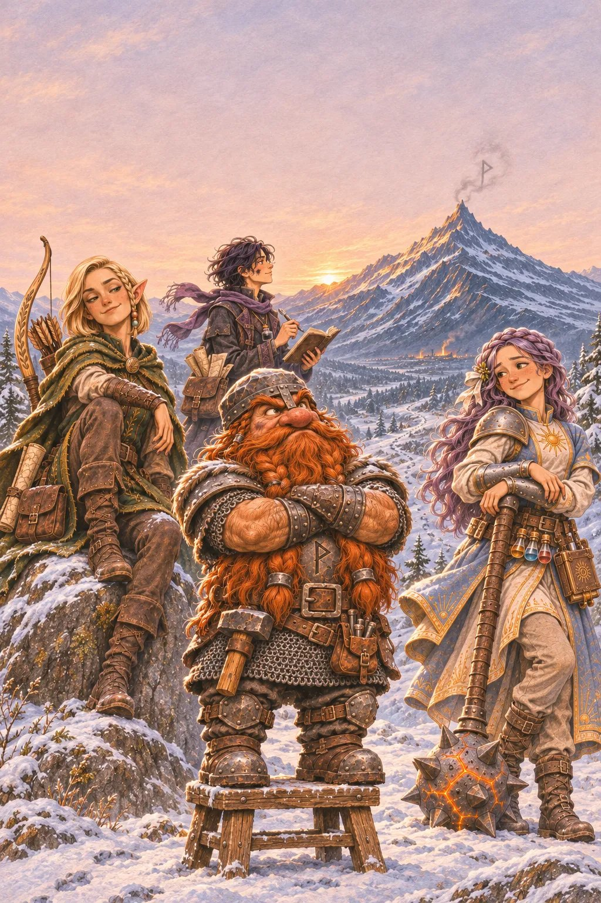

Дамбалдур Трампампури последний бутерброд
повесть о ворчливом гноме, который не любил делиться, и о горе, которая его ждала
Дамбалдур Трампампури последний бутерброд
в которой ворчливый воин, тихий маг, эльфийка-следопыт, храмовница с огненным моргенштерном и орк, не понимающий собственных заклинаний, отправляются в путь. Война началась из-за бутерброда. Бутербродом и закончится
❦
книга первая

Моим детям,
которые слушали эту историю первыми
и всегда спрашивали: «А что было дальше?»
Содержание
- IГде мы?читать →
- IIГусь и короначитать →
- IIIЭкзамен для новичковчитать →
- IVПервое заданиечитать →
- VОркчитать →
- VIБелое пятночитать →
♪ у каждой главы своя музыка — кнопка внизу справа
Карта

Пара слов о мире
Есть на свете земли надёжные, как гномья кладка: их давно нарисовали на картах, по ним ходят телеги, в них пекут хлеб и спорят о соседях. Там стоят людские королевства, шумят эльфийские леса, а в горе-вулкане живут гномы — народ ворчливый, сильный и очень любящий бутерброды.
Но бывает и так: стоит земле остаться без присмотра, стоит в ней завестись чудищам — и она начинает пропадать с карты. Сначала бледнеет, потом становится белым пятном. Тропы в белых пятнах переползают с места на место, а что там водится — не знает никто.
Для таких мест и существует гильдия авантюристов: её люди уходят в белые пятна, чтобы открыть их заново.
А ещё в этом мире идёт самая глупая война на свете. Гномы и эльфы не дружат уже так давно, что никто не помнит, с чего всё началось. Говорят, с бутерброда. Эта книга о том, как война закончилась. И о гноме, который ничего об этом не знал.
Действующие лица

Дамбалдур Трампампур
дворф-воин, умеющий коватьРыжая борода, огромный нос и огромное сердце. Ворчит на всё на свете, кроме бутербродов и друзей.

Римуру
тихий маг, капитанДелает вещи тяжёлыми и лёгкими, плетёт цепи из чернильной тьмы. Улыбается, когда шутят другие.

Элира
эльфийка-лучница, следопытВсегда знает, куда идти. Бережёт друзей больше всего на свете — и таскает кусочки чужих бутербродов.

Теона
храмовница светаЛечит светом, а моргенштерном с огненным сердцем промахивается нарочно, чтобы попасть. И всегда извиняется.

Орк-маг
новый другКолдует по-настоящему, но половину сам не понимает. Хотел бурю — получил тучку, которая льёт суп.
глава первая
Где мы?

Дамбалдур Трампампур проснулся оттого, что ему в бороду падал снег.
Так нельзя. Борода дана гному для красоты, для важности и чтобы хранить в ней мелкий инструмент. Для снега она не предназначена.
Он открыл один глаз. Над ним висело серое небо. Он открыл второй глаз. Небо от этого не исправилось.
— Так, — сказал Дамбалдур. — Кто это сделал?
Ответа не было. Вокруг стояли сосны, высокие и тёмные, засыпанные снегом по самые макушки. Стояли они как попало, а одна и вовсе с наклоном. Гном это сразу отметил. Он был кузнец и не любил, когда криво. За соснами поднимались горы. Что было за горами, он не видел, и это ему тоже не понравилось.
Гном сел и проверил хозяйство. Топор на месте. Шлем на месте, и вмятины на нём свои, родные, каждую он знал в лицо. Нагрудник на месте, и старая руна на нём, выбитая так давно, что гном уже не помнил, что она значит. На поясе молот и узелок с бутербродами. В бороде напильник, моток проволоки и запасная заклёпка.
Узелок был цел. С сыром, с луком, с рыбой и с вареньем, четыре разных, как положено. Дамбалдур выдохнул так, что с ближайшей сосны с перепугу снялась ворона.
— Ну хоть что-то в этом мире правильно, — проворчал он.
Слово «мир» он сказал и сам удивился. Мир казался чужим. Ни этих сосен, ни этих гор он не знал и понятия не имел, как сюда попал. Вчера был тёплый вечер, друзья рядом и горячий ужин. А сегодня лес, снег и тишина. Такая тишина бывает там, где сто лет никто не разговаривал.
Из снега рядом торчал серый камень. Дамбалдур стянул перчатку и положил на него ладонь. Так гномы здороваются с горами.
Гора под ладонью молчала.
— Спит, — определил он. — Крепко. И незнакомая.
Он надел перчатку и набрал воздуху.
— Эй! — крикнул Дамбалдур. — Есть тут кто-нибудь?
— Есть, — ответили у него над головой. — И этот кто-нибудь хочет знать, почему ты так громко храпишь.
Он задрал голову. На толстой ветке, свесив ноги, сидела Элира. Светлые волосы растрепались, на плаще лежал снег, а вид у неё был скучающий: похоже, сидела она тут давно.
— Я не храплю, — сказал Дамбалдур. — Я дышу. Мощно.
— С соседней горы от твоего дыхания осыпались камни, — сказала Элира и бесшумно спрыгнула в снег. — Я тебя по нему и нашла. И встань со снега. Застудишься.
— Я гном! Гномы не застужаются!
— В прошлый раз ты чихал две недели и говорил, что это пыль.
— Это и была пыль, — сказал Дамбалдур. Но со снега встал.
Он терпеть не мог, когда Элира говорила с ним, как бабушка. На вид ей было лет двадцать. Сколько на самом деле, не знал никто, даже она сама.
— Остальных пока нет, — сказала Элира, а пальцы её уже бежали по бусинам в волосах. По одной бусине за каждого друга. Он знал эту привычку: так Элира проверяла, что никого не потеряла.
— Найдём, — сказал он. — Ты ведь у нас лучшая в мире ищейка.
— Следопыт, — поправила Элира.
— Я и говорю, ищейка.
Элира фыркнула, присела у сугроба и замерла. Смотрела она на снег так, как Дамбалдур смотрит на хорошо прокованный клинок: внимательно и с любовью.
— Туда, — сказала она наконец. — Кто-то шёл, падал, вставал, снова падал и, кажется, извинялся перед ёлкой.
— Теона, — сказали они хором.
— Идём, — распорядился гном. — Я впереди.
— Ты затопчешь следы.
Дамбалдур подумал.
— Я впереди, но сбоку, — решил он.
Теону, самую младшую из них, нашли у замёрзшего ручья. Она сидела на камне в обнимку с моргенштерном, железным шаром в шипах на длинной рукояти, и вежливо разговаривала с ёлкой, в которую только что врезалась.
— Простите, пожалуйста, — говорила она ёлке. — Я вас совсем не заметила. Вы такая... зелёная.
— Теона! — крикнула Элира.
Теона подскочила, увидела друзей и просияла. Она кинулась обниматься и обняла Дамбалдура вместе со своим оружием, потому что выпустить его из рук не догадалась. Железный шар был тяжёлый и тёплый. Сквозь трещины в нём мерцало оранжевое, как угли в печке.
Гном первым делом осмотрел шар. Не треснул ли. Не остыл ли. Этот моргенштерн он выковал сам и волновался за него больше, чем за собственный шлем.
— Цел, — сказал он с облегчением. Потом посмотрел на Теону. — И ты, я вижу, тоже.
— Я думала, я одна, — сказала Теона, и голос у неё дрогнул. — Проснулась, а вокруг только снег. В храме нас учили: если потерялся, сиди на месте и считай. Я сидела и считала до тысячи, чтобы не бояться. Дошла до четырёхсот двенадцати.
— А дальше? — спросила Элира.
— А дальше врезалась в ёлку. Пришлось начинать сначала.
Последним нашёлся Римуру, их маг и капитан. Он не падал, не храпел и ни во что не врезался. Он сидел под скалой, очень прямо, и смотрел туда, откуда они вышли. Будто знал, с какой стороны они появятся. На пальцах у него темнели чернильные пятна, которые не смывала никакая вода.
— Я знал, что Элира найдёт, — сказал Римуру, поднимаясь. — Поэтому сидел на одном месте. Того, кто бегает, искать труднее.
— А если бы не нашла? — спросила Элира.
Римуру подумал.
— Тогда я бы долго сидел, — спокойно сказал Римуру.
Четверо стояли посреди заснеженного леса и смотрели друг на друга. Все четверо. Дамбалдур только сейчас заметил, что сжимает топор изо всех сил, и разжал пальцы.
— Ну, — сказал он. — А теперь кто-нибудь скажет мне, где мы?
Никто не сказал.
— Магия спит, — сказал Римуру. — Я её чувствую. Она здесь. Но не отвечает.
Он помолчал.
— И ещё. Здесь давно никто не ходил. На соснах ни одной зарубки от топора. Ни одной тропы. Даже звериные следы старые.
— Следы читаю, — сказала Элира. — А куда нам вообще идти, не знаю.
Теона посмотрела на свои ладони и промолчала. Только крепче прижала моргенштерн.
Дамбалдур заметил. Говорить он ничего не стал. Просто встал так, чтобы загородить её от ветра.
— Развели тут, — сказал Дамбалдур. — Сейчас я попрошу удачи, и всё наладится.
— Может, не надо? — быстро спросила Элира.
Но он уже начал. Сперва побурбурил пальцем по губам: бур-бур-бур. Потом шлёпнул себя по щекам, по левой и по правой. Дёрнул себя за оба уха разом. Перекувырнулся через голову прямо в снегу, встал и звонко хлопнул себя по пузу.
Теона смотрела, открыв рот. Римуру смотрел очень внимательно.
Так гномы колдуют. Что выйдет, не знают даже сами гномы.
С сосны сорвалась шишка и упала гному точно в ладонь. В шишке сидел орех, крупный и целый.
— Ха! — сказал Дамбалдур.
Следом с той же сосны сошёл весь снег. Весь он достался Элире.
Из сугроба показалась светлая макушка. Потом два глаза.
— Это на удачу, — объяснил гном.
— На чью? — спросила Элира.
— У него магия не спит, — сказал Римуру. И посмотрел на гнома долго, будто запоминал.
Орех Дамбалдур расколол о шлем и поделил на четверых. Вышло по крошке.
— Ладно, — сказал он, жуя. — Значит, будем как все. Ногами. Идём вниз по ручью! Вода всегда выводит к жилью.
Никто не двинулся. Все посмотрели на Римуру.
Римуру поднял голову. Когда он так поднимал голову, все замолкали: сейчас скажет, что делать.
— Идём туда, где люди, — сказал он. — Где люди, там дороги. Где дороги, там карты. А по карте поймём, где мы.
Он подумал.
— Вниз по ручью.
— Я так и сказал! — возмутился гном.
— Ты сказал громко, — объяснила Элира, вытряхивая снег из капюшона. — А он сказал, и стало понятно.
— А я сказал первым, — добавил Дамбалдур, чтобы последнее слово осталось за ним.
Он развязал узелок, пересчитал бутерброды и объявил:
— Внимание. У нас четыре бутерброда. Делим на неделю. По кусочку в день.
Делил он как кузнец. Вытянул из бороды проволоку, отмерил, поставил ногтем зарубки и только потом взялся за топор. Кусочки вышли одинаковые, ровные, как монеты. И такие же маленькие.
— По справедливости, — сказал гном. — Остальное никто не трогает. Особенно ты, Элира.
Элира невинно посмотрела в небо.
А второй кусочек он молча подложил Римуру.
— Ты тощий, — буркнул он. — Смотреть больно.
Через снежные горы шли пять дней.
Римуру шёл впереди. Говорил он за день слов десять. Иногда останавливался, смотрел на небо или на камни и поворачивал в сторону. Через час выяснялось, что там, куда он не пошёл, был обрыв.
Элира на каждом привале забиралась повыше, на скалу или на дерево. Оттуда ей было видно всех своих сразу.
А Дамбалдур здоровался с каждой горой. Клал ладонь на камень, слушал и шёл дальше.
— Ну что? — спрашивала Теона.
— Спит, — отвечал гном. — Тут все спят. Сонное царство.
В первый же день Теона откопала под снегом травку от кашля и обрадовалась ей, как подарку. Кашля ни у кого не было. Травку она всё равно взяла, а Элира показала ей, где растёт ещё.
А хуже всех был второй день. На второй вечер кончились бутерброды.
— Как это кончились? — спросила Теона. — Мы же делили на неделю.
Дамбалдур покраснел до самой бороды.
— Я делил, — сказал он с достоинством. — И проверял, не испортились ли. Каждый. Тщательно.
— И как? — спросила Элира.
— Не испортились, — вздохнул гном. — Просто неделя получилась короткая. Гномья неделя. Она быстрее.
Элира нагнулась и подняла из снега чёрное перо. Воронье. На пере висела хлебная крошка.
Дамбалдур сделал вид, что не видит никакого пера. Признаться, что гнома обокрала ворона, было хуже, чем прослыть обжорой.
Элира посмотрела на него и молча спрятала перо в рукав.
Элира прыснула. Римуру ничего не сказал, но глаза у него на миг стали тёплые.
А Теона ничего не сказала. Она только вздохнула, совсем тихо, и у неё заурчало в животе.
От этого звука гному стало нехорошо. Он покраснел ещё сильнее, хотя сильнее было уже некуда.
— Что случилось? — спросил он сердито.
— Ничего, — сказала Теона. — Это не я. Это живот.
— Всё, — сказал Дамбалдур и встал. — Я пошёл. Всё исправлю.
— Куда? — спросила Элира.
Но он уже шагал к ручью.
Ручей был замёрзший. Гном постоял над ним, примерился и ударил по льду кулаком. Лёд не треснул. Лёд взорвался. Вверх полетели куски, брызги и три сонные рыбы. А сам гном от собственного удара сел на лёд и поехал. Спиной вперёд, вниз по ручью, до самого поворота, и там скрылся.
Его не было долго.
Когда Дамбалдур вернулся, отряхивая бороду, рыбы лежали на берегу. Одна лежала у Римуру в капюшоне.
— Вот, — сказал гном. — Исправил. Чего смотрите? Я не для вас старался. Мне просто лёд не понравился.
Рыбу испекли на углях. Теона съела свою до последней косточки и уснула раньше, чем стемнело. А гном долго сидел и сердито дул на кулак.
В ту же ночь Элира нашла следы. Огромные и глубокие, словно кто-то ронял в снег бочки. Она долго стояла над ними, а вернувшись, сказала:
— Ночуем без костра.
Без костра было совсем холодно. Они сидели вчетвером, прижавшись спинами к скале. Теона стучала зубами, и от этого позвякивал моргенштерн.
— Сейчас согрею, — шепнул Дамбалдур.
Элира молча отодвинулась.
Колдовать громко было нельзя, и он колдовал шёпотом. Тихонько побурбурил по губам, бур-бур, дёрнул себя за левое ухо и трижды погладил пузо, как кота.
Борода у него стала тёплая. По-настоящему тёплая, как камень у горна. Теона ахнула и протянула к ней руки.
И тут борода засветилась. Ровным рыжим светом, на всю скалу.
— Погаси, — прошипела Элира.
— Я не знаю как!
— Тебя видно с той стороны ущелья!
Элира сдёрнула плащ и накрыла бороду вместе с гномом. Под плащом стало светло и уютно, как в фонаре. Туда сразу залезла Теона. За ней, помедлив, залез Римуру.
Сама Элира осталась снаружи, на холоде. Сторожить.
— Сиди и не свети, — сказала она.
— Как я могу не светить, если я свечу? — глухо спросили из-под плаща.
Потом стало тихо. Под плащом пахло дымом и мокрой шерстью.
— А мы вернёмся домой? — спросила Теона шёпотом.
Никто не ответил сразу.
— Звёзды здесь другие, — сказал Римуру. — Ни одной знакомой. Я смотрел каждую ночь.
Теона сглотнула.
— Правило девятое, — сказала она. — Храмовница не боится темноты.
— А ты боишься? — спросил гном.
— Правило не говорит, что нельзя.
— Я один раз уже потеряла всех друзей, — сказала Элира снаружи. Бусины в её волосах тихонько стукнули друг о друга. — Давно. Больше не собираюсь. Куда вы, туда и я. А где дом, разберёмся.
— Разберёмся, — сказал Дамбалдур. — Вот найду того, кто нас сюда закинул, и поговорю с ним. Коротко.
Он подвинулся и подставил Теоне плечо. Плечо у гнома было широкое, а меховой воротник пах дымом. Теона уснула почти сразу. Римуру не спал. Он сидел прямо и смотрел в щёлку между плащом и скалой, в темноту. Гном знал: Римуру всегда засыпает последним. Если вообще засыпает.
Потом он высунул из-под плаща руку и потянул Элиру за рукав.
— Залезай. Тут место есть.
— Я сторожу.
— Сторожи отсюда. Застудишься.
Элира помолчала. И залезла.
Борода светила до самого утра, всё слабее и слабее. А гном ещё долго лежал с открытыми глазами и думал про дом. Какой дом, где он, Дамбалдур не знал. Просто думал. Тёплое такое слово.
На четвёртый день сугроб рядом с ними встал.
Он был втрое выше Дамбалдура. Белая косматая шерсть, как старый снег. Руки до земли. И два маленьких синих глаза, глупых и голодных.
— Тролль, — сказала Элира и выхватила стрелу.
Второй сугроб тоже встал. И третий.
Элира молча достала ещё две стрелы.
— Строимся! — скомандовал Дамбалдур и перехватил топор. — Я в середине, Элира...
— Нет, — сказал Римуру.
И гном замолчал.
— Ты впереди, один, — сказал Римуру. — Они пойдут на самого громкого. Элира, на камень. Теона, справа. Целься в тролля.
— Она же промажет! — сказал гном.
— Да, — сказал Римуру.
Первый тролль выдрал из склона глыбу льда и швырнул.
Глыба летела прямо в Теону. Теона стояла с моргенштерном в руках и смотрела на неё круглыми глазами.
Дамбалдур прыгнул. Глыба ударила его в шлем, раскололась на куски, а он покатился по снегу.
— Новая вмятина, — сообщил он, поднимаясь. — Вот теперь я злой.
Тролль, который кинул глыбу, посмотрел на свои пустые лапы. Заглянул под ноги. Оглянулся. Похоже, он никак не мог понять, куда она делась.
Пока он искал, Элира выстрелила. Стрела ушла троллю в плечо, и тот заревел.
Вторую стрелу Элира пустила в тролля, который подкрадывался сзади. Стрела отскочила от его шерсти, как от валенка.
— Сзади! — крикнула Элира.
Но было поздно.
Второй тролль сгрёб Дамбалдура в охапку и поднял, как мешок с картошкой.
— Поставь, где взял! — заорал гном, дрыгая ногами. — Я тебе не полено! И кто так хватает? Локти шире! Спину ровнее!
Тролль не поставил. Он сжал лапы. Сильно. У Дамбалдура затрещали ремни на кольчуге, и он перестал кричать, потому что кричать стало нечем. Воздуха не было.
— Дамбалдур! — закричала Теона.
Кольчуга жалобно звякнула. Одно колечко лопнуло.
— Пусти, — прохрипел Дамбалдур. — Ты мне… кольчугу помнёшь! Я её сам плёл!
Он упёрся локтями и надавил плечами. Лапы тролля медленно, со скрипом, разошлись в стороны, как ворота. Гном выскользнул, ухватил тролля за косматую лапу, крякнул и перебросил его через себя.
Тролль пролетел над сугробом, кувыркнулся и съехал по склону на спине, как на санках.
А гном не рассчитал. Он крутанулся вместе с троллем, отпустил его на полкруга позже, чем надо, и сам улетел в другую сторону. Прямо в сосну. Сосна загудела, как колокол.
Элира опустила лук и посмотрела на Дамбалдура очень внимательно.
— Ты сейчас поднял тролля, — сказала она.
— Он сам, — отмахнулся гном, держась за сосну. — Поскользнулся.
Первый тролль, тот, что со стрелой в плече, бросился на них, и тут Теона подняла моргенштерн.
— Извините, пожалуйста, — сказала она троллю. — Я сейчас буду вас бить. Мне очень неловко.
Шар загудел. Сквозь трещины полыхнуло оранжевым.
С Теоной всегда так: куда она целится, туда не попадает. Хочешь попасть в лёд, целься в тролля. Так она и сделала.
Шар ударил в лёд прямо у ног тролля. Лёд зашипел, из-под удара рванул горячий пар, и на миг ничего не стало видно. Когда пар рассеялся, тролль стоял мокрый, с голым боком, где растаяла шерсть, и с ужасом смотрел на Теону.
— Я же предупреждала, — виновато сказала Теона.
Тролль попятился.
— Они боятся тепла! — крикнула Элира.
Третий тролль всё это время сидел в снегу, зажмурившись, будто так его никто не найдёт. Теперь он открыл глаза, встал и поднял над головой огромный снежный ком, целясь в мага.
Римуру стоял за камнем и не двигался. Тролль замахнулся.
Тогда Римуру нагнулся, слепил снежок, маленький и обычный, и бросил его. Спокойно, будто так и было задумано.
Снежок полетел. На середине пути он потяжелел и пошёл вниз, как камень. Он ударил тролля в живот с глухим «бумм». Тролль охнул, уронил свой ком себе на голову и сел.
Римуру смотрел на свою руку. На снегу у его ног, там, где он слепил снежок, осталось маленькое чёрное пятнышко. Чернильное.
— Это ты? — спросила Элира.
Римуру не ответил. Он смотрел на свою ладонь так, будто она ему что-то сказала.
— Попало же, — сказал гном. — Остальное потом разберём.
Тролли сбились в кучу. Их было трое: мокрый, сидящий и тот, что съехал на спине. Они заворчали и снова пошли вперёд.
— Теона. Самый большой.
Сказал это Римуру тихо, а Теона уже поднимала шар. Она прицелилась в самого большого тролля.
Шар ударил в склон у них под ногами. Пар рванул столбом. Лёд под троллями стал мокрый и гладкий, как стекло. Все трое сели, поехали вниз, сначала медленно, потом быстрее, и с воем скрылись в метели.
— Я ковал его для врагов, — сказал Дамбалдур, глядя им вслед. — Но для льда, выходит, тоже годится.
Гном сел в сугроб. Борода у него была в снегу, шлем съехал на нос. Теона опустилась рядом, положила ладонь ему на лоб, где из-под шлема сочилась кровь, и закрыла глаза. От ладони пошло тёплое золотое свечение, слабенькое, как свеча за окном. Ссадина затянулась, но не до конца: осталась розовая полоска.
— Получилось, — удивлённо сказала Теона. — Свет ещё со мной. Только его мало.
— Хватит и такого, — сказал Дамбалдур.
— На что жалуетесь? — строго спросила Теона. Так в храме учили спрашивать больных.
— На троллей, — сказал гном.
Теона кивнула, будто это был очень правильный ответ.
— Я считаю, это была блестящая победа, — объявил он. — Особенно моя часть.
— Твоя часть, — сказала Элира, — это когда тебя носили на руках?
— Это была военная хитрость. Я подбирался поближе.
На пятый день горы кончились.
Они поднялись на перевал и остановились. Внизу лежала широкая долина. А за ней, выше облаков, стояла гора.
Огромная, тёмная, как старое железо, с острой вершиной, над которой вилась тонкая струйка дыма. На склонах блестели чёрные гладкие скалы, точно кто-то пролил и заморозил стекло. А у самого подножия, далеко-далеко, мерцали тёплые огоньки.
— Обсидиан, — сказал Римуру. — Камень из огня. Это вулкан.
Дамбалдур снял шлем.
Просто снял и держал в руке. Снег падал ему на рыжую макушку, а он не замечал.
Элира и Теона переглянулись. Гном молчал. А он не молчал никогда. Он спорил, шутил, жевал, что-нибудь чинил и чем-нибудь был недоволен. Даже во сне он бормотал, что подушку набивали криво.
Ветер донёс со стороны горы запах. Дым, горячий камень, железо.
Запах кузницы.
У гнома защипало в носу. Он смотрел на огоньки у подножия, и ему хотелось туда, как хочется под одеяло, когда замёрз. Но этой горы он не знал. Он был уверен, что видит её впервые.
Он присел, стянул перчатку и положил ладонь на камень перевала.
Камень был тёплый.
— Не спит, — сказал Дамбалдур очень тихо.
— Дамбалдур? — Элира тронула его за плечо. — Ты как?
— Нормально, — сказал он и откашлялся. — Гора как гора. Большая. Дымит. Ничего особенного.
Он постоял ещё немного. И вдруг сел в снег, обхватил колени, перекатился бочонком туда и обратно, трижды дунул себе в бороду и сказал горе: «Здрасьте».
У всех четверых развязались шнурки. Разом, на обоих сапогах. Теона наступила на свой и села в снег.
А следом стих ветер. Сразу, точно его выключили. Снег перестал лететь в глаза, и тучи над тропой разошлись, как занавес.
— Ой, — сказала Теона из сугроба. — У вас получилось!
— В лесу была шишка, — сказал Римуру, завязывая узел. — А тут целый ветер.
Дамбалдур посмотрел на свои ладони. Потом на гору.
— Повезло, — сказал он, натянул перчатку и поскорее надел шлем. — Пошли. Нам к людям.
И они пошли вниз. Мимо горы.
Он оглянулся только один раз. Огоньки у подножия мигнули.
Гора смотрела ему вслед.
глава вторая
Гусь и корона

Внизу снега почти не было, зато был голод.
Три дня без еды гном пережить может. Пережить их молча он не может. Дамбалдур шёл последним и ругал всё подряд. Дорогу, которую клали без уровня. Кусты, которые росли как попало. Собственный живот, который пел на весь лес и не попадал в ноты.
Впереди Теона споткнулась на ровном месте. Перед кочками она больше не извинялась. Сил не было даже на это.
Гном замолчал на полуслове.
Он догнал её и молча снял у неё с плеча сумку. Повесил себе. Сумка была лёгкая, почти пустая. Но так было надо.
— Тяжёлая, — пожаловался он на пустую сумку. И понёс её дальше.
Потом остановился посреди дороги.
— Так, — сказал он сердито. — Хватит. Сейчас я всё устрою.
Элира молча натянула капюшон до самого носа. На всякий случай.
Дамбалдур подёргал себя за бороду, побурбурил по губам, крутанулся на пятке, шлёпнул себя по пузу, как по бочке, и сказал: «Оп!»
Сначала ничего не случилось. Потом слева потянуло тёплым. Пахло свежим хлебом, только что из печи, с хрустящей коркой.
Все четверо разом повернули головы.
— Там печка, — сказал Римуру. — Значит, там люди. Идём налево.
— Вот! — сказал Дамбалдур. — А вы боялись.
Плохое выяснилось через сто шагов. Запах не отставал. Он шёл рядом, залезал в нос и рассказывал про корочку. Есть от него хотелось в десять раз сильнее, а до печки было ещё полдня ходу.
— Выключи, — попросила Элира из-под капюшона.
— Оно не выключается, — мрачно сказал гном. — Шевелите ногами.
Запах шёл за ними до самого полудня. Дорога к тому времени пошла по краю обрыва. Внизу, далеко, шумела река.
А потом Элира остановилась.
— Тихо, — сказала она. — Не мы одни его нюхаем.
В кустах у дороги затрещало. Треск был тяжёлый, неторопливый. Кусты раздвинулись, и на дорогу вышел кабан.
Он был ростом с корову. Щетина на загривке стояла дыбом, жёсткая и серая. Из пасти торчали два жёлтых клыка, загнутых, как серпы. Кабан поднял пятачок и шумно потянул воздух.
Гном оглядел щетину.
— Хорошая, — сказал он с уважением. — Из такой щётки для горна вяжут.
— Он не на продажу, — сказала Элира. — Отойди от него.
Но кабан уже нашёл, что искал. Пятачок повернулся к гному. Запах хлеба шёл от гнома, от его бороды и усов, как дым от костра.
Кабан опустил голову и побежал.
Дамбалдур успел только расставить ноги. Он поймал кабана за оба клыка, и его отбросило на шаг. Потом ещё на шаг. Сапоги пропахали в дороге две борозды.
В горах он перебросил тролля. Но тогда он был сыт. Теперь три голодных дня сидели у него в руках и в коленях, и колени дрожали. Кабан сопел, упирался и толкал. И гном ехал назад.
А сзади, в трёх шагах, был обрыв.
Элира натянула тетиву. И опустила. Из-за кабаньей головы торчал шлем гнома.
— Не могу, — сказала она. — Ты мешаешь. Он идёт на запах! Запах на тебе!
— Я заметил! — прохрипел гном.
Римуру не двинулся с места. Он смотрел не на кабана. Он смотрел на обрыв, на сапоги гнома, на Теону. Потом сказал, не повышая голоса:
— Теона. Пояс.
Гном проехал ещё шаг. До обрыва осталось два.
Теона бросила моргенштерн. Поднять его у неё не было сил. Она подбежала сзади, схватила гнома за пояс обеими руками и упёрлась.
— Правило шестое, — сказала она сквозь зубы. — Своих не отпускают.
Гном перестал ехать. Сапоги Теоны ушли в дорогу по щиколотку.
Кабан фыркнул. Он сунул пятачок гному прямо в бороду, втянул воздух и задрожал от жадности. С клыков на бороду потекло.
— Не слюнявь! — взревел Дамбалдур. — Я её два дня расчёсывал!
— Запах твой, — сказал Римуру. — Ты его сделал, ты и убирай.
— Чем?! У меня руки заняты!
— Руки не нужны, — сказал Римуру.
Гном моргнул. А ведь правда. Колдуют гномы обычно руками. Но и без рук умеют. Дамбалдур скосил глаза к носу, побурбурил губами без всякого пальца, бр-р-р, прямо кабану в пятачок, громко чихнул и сказал:
— Кыш!
Запах хлеба соскочил с гнома. Весь, разом. И уселся кабану на спину.
Кабан замер. Понюхал воздух. Оглянулся на собственный хвост: хлебом пахло оттуда. Кабан рванул за хвостом и выдернул клыки из рук гнома. Хвост пах хлебом и убегал. Кабан закружился на месте, всё быстрее и быстрее, а потом с визгом умчался в лес догонять самого себя.
Стало тихо.
Гном сел прямо на дорогу. Руки у него тряслись. На нагруднике белела свежая царапина от клыка. Она прошла у самой старой руны. Гном проверил руну пальцем. Цела. Тогда он выдохнул.
Теона отпустила его пояс и села рядом.
— Я, кажется, порвала вам ремень, — сказала она.
— Ремень починю, — сказал гном. Он помолчал. — Держала хорошо.
Гном понюхал свою бороду и скривился. Запах хлеба ушёл вместе с кабаном. А от гнома теперь пахло кабаном. Крепко, на всю дорогу.
Элира понюхала воздух и молча перешла на другую сторону дороги.
Земля людей началась с фермы.
Сначала был забор. За ним поле, где из-под последнего снега торчала жёлтая щетина прошлогодней соломы. Выскочил пёс, понюхал бороду Дамбалдура, чихнул и с визгом удрал. А на заборе висели дети.
Детей было трое. Они смотрели на путников во все глаза.
— Мама! — заорал самый маленький. — Мама! Там ходит ёжик в железе!
— Я не ёжик! — возмутился Дамбалдур. — Я гном!
— Мама! Ёжик говорит, что он гном!
Маленький слез с забора, подошёл и постучал кулаком по шлему. Шлем загудел.
— Звенит, — сообщил маленький.
— Конечно, звенит, — сказал Дамбалдур. — Хорошая сталь всегда звенит. Плохая брякает. Стучи вот сюда, тут звонче.
И подставил шлем другим боком.
Средний мальчик тем временем ходил вокруг Теоны.
— А можно подержать? — спросил он про моргенштерн.
— Нельзя, — серьёзно сказала Теона. — Он тяжёлый.
— Ты же держишь.
— Я привыкла.
Она поставила шар на землю, чтобы мальчик посмотрел поближе. Земля под шаром просела. Мальчик попробовал его качнуть двумя руками, потом плечом. Шар не заметил.
Девочка постарше смотрела только на Элиру. На её острые уши, на лук, на светлые волосы.
— Ты настоящая эльфийка? — шёпотом спросила она.
— Самая настоящая, — так же шёпотом ответила Элира.
— А правда, что эльфы воруют бутерброды?
Дамбалдур так и застыл с подставленным шлемом.
— Так дедушка говорит, — объяснила девочка. — Что давным-давно эльфы стащили у гномов самый большой бутерброд на свете. И с тех пор гномы с эльфами воюют.
Дамбалдур медленно повернулся к Элире. Элира медленно отвела глаза.
— Я такого не помню, — сказала она. — В мои-то годы много чего не помнишь.
— А я знаю, что это правда, — вдруг сказал Дамбалдур. — Откуда знаю, не знаю. Вот тут знаю.
Он постучал кулаком по нагруднику, там, где сердце. Нагрудник гулко отозвался, как пустой котёл.
Мама детей оказалась женщиной доброй и занятой. Ёжику в железе и его друзьям она вынесла кувшин молока и горячую лепёшку на четверых. Палец у неё был замотан тряпкой.
— Даром брать нельзя, — сказала Теона. — Это правило второе. Дайте руку, пожалуйста.
Она подержала палец в ладонях. Под тряпкой коротко мигнуло золотым. Порез затянулся.
Хозяйка долго смотрела на палец. Потом вынесла вторую лепёшку.
— Правило второе выполнено, — серьёзно сказала Теона. — Лечение окончено. Спасибо за лепёшку.
Лепёшки делил Дамбалдур. Он резал их топором, впервые в жизни на глаз. Себе он положил самый маленький.
— Я не голодный, — сказал он и отвернулся. Чтобы никто не видел, как он смотрит на чужие куски.
К вечеру они добрались до таверны.
Она стояла у самой дороги, кривая и тёплая, с жёлтыми окнами и вывеской, на которой был нарисован гусь в короне. Из трубы шёл дым.
Дамбалдур остановился и оглядел таверну снизу доверху.
— Угол завален, — сказал он. — Крыша просела. Трубу клал человек, который печку видел один раз, издалека. Заходим, пока не рухнуло.
Внутри было людно, шумно и жарко. Но стоило им войти, как шум стих. Все уставились на острые уши Элиры, на рыжую бороду Дамбалдура и снова на уши. Кто-то уронил ложку.
Дамбалдур прислонил топор к стойке. На стойке сидел деревянный гусь в короне, такой же, как на вывеске, только с отбитым клювом.
За стойкой стоял хозяин, широкий и румяный, с полотенцем на плече. Он протёр одну и ту же кружку четыре раза подряд и наконец сказал:
— Эльфийка. И гном. В моей таверне. В один день.
— Это плохо? — спросила Теона.
— Это небывало! — сказал хозяин. — Последнего эльфа тут видели при моём деде. А гномов я только на картинках видел. Они, говорят, из своей горы носу не кажут. Вы надолго? Мне надо сбегать за женой. Она не поверит.
— Нам бы поесть, — сказал Римуру. — И узнать, где мы.
— Где вы, это просто, — обрадовался хозяин. — Это таверна «Гусь и корона». А до большого города Ратвальда полдня пути по дороге. Только по лесу ночью не ходите. Волки нынче с гор спускаются. Никогда такого не было. Говорят, наверху им жарко стало.
Элира, не оборачиваясь, вынула из колчана стрелу, повертела и убрала назад.
Четверо переглянулись. Ни «Гусь», ни «Ратвальд» им ничего не сказали.
— А королевство как называется? — спросил Римуру.
— Королевство Трёх Рек, как же ещё.
Это им тоже ничего не сказало. Теона взяла Элиру за руку. Римуру ничего не сказал. Только посмотрел в окно, туда, где за долиной темнела гора.
— А огни под той горой? — спросил он, не оборачиваясь.
— Застава, — сказал хозяин. — Дальняя, у самой подошвы. Стражники жалуются, что там вечно дымом пахнет. А что выше, не знаю. Туда никто не ходит.
— А поесть, это сейчас, — продолжал хозяин, ничего не заметив. — Садитесь под главную балку, там лучшие места. Таверну мой прадед строил. Сто лет стоит! Балка у меня крепче гор!
В таверне стало тихо. Все, кто сидел рядом, поглядели на гнома. Гномов они видели только на картинках, но про горы и гномов знал каждый.
— Крепче гор? — тихо переспросил Дамбалдур.
Хозяин гордо похлопал по столбу.
Теона зажала рот ладонью. Римуру спокойно отошёл от стойки на два шага и сел за ближний стол. Похоже, он знал, что сейчас будет.
Дамбалдур медленно положил руки на стойку. Борода у него встопорщилась, как у рассерженного кота. Хозяин отступил.
— Крепче гор?! — переспросил гном. — Да я горы знаю! Я мечи ковал, когда твой прадед пешком под стол ходил! Сейчас я тебе покажу, какая она крепкая!
И он подпрыгнул. Хотел только постучать по балке кулаком. Но у гномов сильные ноги, а возмущение у Дамбалдура было большое.
БАМ.
Он влетел головой прямо в потолочную балку. Балка треснула, доски разошлись, и Дамбалдур застрял по самые плечи, вместе со шлемом, бородой и возмущением. Снизу торчали только ноги в тяжёлых сапогах. Ноги болтались.
И таверна грохнула хохотом.
— Чаще всего я вижу его именно так, — вздохнула Элира и встала прямо под ним.
— Снимите меня, — глухо донеслось сверху. — Немедленно. Тут нечего смеяться. Я проверял вашу балку.
Тянули вчетвером: Элира, Теона, Римуру и хозяин. Дамбалдур выскочил из дыры, как пробка из бутылки, сверху посыпались щепки, а у хозяина в руках остался сапог.
Хозяин долго смотрел на дыру в потолке.
И расхохотался от души, даже полотенце упало с плеча.
— Ну, гном! — сказал он, вытирая слёзы. — Ну силища! Знаешь что? Ужин и ночлег за счёт заведения. Не каждый день у меня гномы потолки бодают. Дыру заделывать не буду, буду гостям показывать.
— Дыру показывай, — сказал Дамбалдур, натягивая сапог. Он задрал голову и смотрел на балку. И мрачнел на глазах. — А вот это показывать стыдно.
— Что?
— Балку. Сучок на сучке. Скоба ржавая. Держалась она у тебя на честном слове. Я такое оставить не могу. Я потом спать не буду.
— Да она тридцать лет висит!
— Тридцать лет ей было страшно, — сказал гном. — Теона, подержи.
Теона встала на лавку и подняла балку одной рукой. В другой у неё была ложка: ужин уже принесли.
— Вам не тяжело? — спросил хозяин слабым голосом.
— Нет, спасибо, — сказала Теона. — А что, должно быть?
Элира забралась наверх, на соседнюю балку. Сидеть высоко она любила, а оттуда было удобно подавать гвозди. Римуру держал фонарь и молча показывал, куда гвоздь. Дамбалдур снял с пояса молот, вытянул из бороды проволоку и запасную заклёпку и взялся за дело.
Стучал он недолго. Он перетянул балку проволокой в три витка и посадил на заклёпку. Когда он слез, балка сидела как влитая. Дыра в потолке стала ровной и круглой, с гладким краем. А на заклёпке была выбита маленькая руна.
— Что она значит? — спросил хозяин.
— «Не прыгать», — сказал Дамбалдур.
Гости захлопали. Гном сделал вид, что не слышит, и долго протирал молот рукавом.
Хозяин наконец сбегал за женой. Жена пришла заспанная, в платке. Она оглядела острые уши, рыжую бороду и круглую дыру в потолке.
— Циркачи, — сказала она и ушла досыпать.
Ужин был простой и горячий. Дамбалдур ел молча. Раз в минуту он поднимал глаза на свою заклёпку и проверял, держит ли. Теона уснула прямо за столом, не доев. Римуру отодвинул миску и подложил ей под щёку свёрнутый плащ.
Элира утащила с тарелки Дамбалдура шкварку. Он видел. И промолчал.
Ночью, когда все легли, он обошёл комнату. Подоткнул Теоне одеяло. Поправил Римуру сапоги, чтобы стояли ровно. А сам сел у окна и смотрел в темноту, туда, где за долиной была гора. Смотрел, пока не поймал себя на этом. Тогда он сердито задёрнул занавеску. И сразу отдёрнул обратно.
Сверху, с крыши, доносился шёпот. Элира опять не спала. Она повторяла их имена, все три, по кругу, как считалку. Гном не мешал. Пусть считает.
Римуру тоже не спал. Он сидел у другого окна и смотрел туда же, куда гном. Далеко за тёмной долиной, над горой, светилась тонкая красная полоска.
Утром, пока остальные собирались, Римуру подошёл к гному.
— Шишка, тёплая борода, хлеб, кабан, — сказал он. — Всё это было далеко от горы. А ветер был у самой горы. Чем ближе к ней, тем сильнее твоя магия.
Гном почесал бороду.
— И что это значит?
— Узнаю, — сказал Римуру.
К полудню они вышли к Ратвальду.
Над дорогой поднялись каменные башни с цветными флагами, а под ними стены и ворота. Перед воротами шумела целая река народа: телеги с сеном, торговцы с корзинами, стражники в синих плащах, дети, собаки и гуси.
Город был до того огромный, что даже Дамбалдур на минуту перестал ворчать. Потом он увидел ворота.
— Петли хорошие, — сказал он с удивлением. — Смотри-ка. Умеют, когда хотят.
— Люди есть, — сказал Римуру. — Дороги есть. Осталось найти карту.
— А платить за неё чем? — спросила Элира.
Все посмотрели на Дамбалдура. Он вывернул карман. Из кармана выпали гвоздь, пуговица и крошки.
У Теоны нашлась травка от кашля. Римуру молча показал пустые ладони. Элира развела руками.
У ворот висел деревянный щит, весь заклеенный объявлениями. Одно было крупнее остальных, с красной печатью внизу:
«ГИЛЬДИЯ АВАНТЮРИСТОВ ищет новичков. Опыт не обязателен. Храбрость обязательна. Кормим».
Дамбалдур прочитал его два раза. На слове «кормим» он задержался особенно надолго.
— Вот, — сказал он и ткнул в объявление толстым пальцем. — Вот это мне нравится. Вот это правильный мир.
Ниже мелкими буквами было приписано: «Экзамен сегодня в полдень. Опоздавших не ждём. Слабонервных не берём. Эльфов, гномов и прочих тоже берём».
— Сто лет, — повторила Элира. — Интересно, куда они все делись.
Дамбалдур не ответил. Он оглянулся. Далеко-далеко, на краю неба, над горой поднимался дым. Вчера на закате он был тонкий, как нитка. А теперь стал гуще.
Будто кто-то там, внутри, раздувал огонь.
На башне ударил колокол.
— Который час? — спросила Теона.
— Полдень, — сказал Римуру. — Бежим.
глава третья
Экзамен для новичков

Бежать по чужому городу трудно. Бежать по нему на пустой с утра живот ещё труднее. А хуже всех приходится тому, у кого ноги короче, чем у остальных.
— Не отставай! — крикнула Элира через плечо.
— Я не отстаю! — пыхтел Дамбалдур. — Я прикрываю сзади!
Колокол бил. Четвёртый удар. Пятый. Они проскочили рыбный ряд, перепрыгнули через гуся и свернули за угол.
Дорогу к гильдии им на бегу крикнул стражник. А дальше её узнали сразу. Это был высокий дом из тёмного дерева, а на крыше у него вместо флюгера торчал железный сапог. Сапог поворачивался носком туда, куда дул ветер. Над дверью были вырезаны какие-то слова. Римуру на бегу задрал голову, но прочитать не успел.
Десятый удар. Одиннадцатый.
С двенадцатым ударом они влетели в дверь все четверо разом. И застряли в ней втроём, потому что дверь была одна, а гном широкий. Римуру уже стоял внутри и поправлял рукав. Как он проскользнул мимо гнома, никто не заметил.
— Выдохни, — сказала Элира.
Дамбалдур выдохнул, и они высыпались внутрь.
В большом зале пахло воском и старой бумагой. У стен толпилось человек двадцать пять: здоровенные парни с мечами, две сестры с копьями, дядька с сетью. Все они обернулись.
А одну стену целиком занимала карта. Реки на ней были синие, леса зелёные, дороги рыжие. Только по краям карта белела, словно художнику не хватило краски. Римуру подошёл к ней и остановился.
Теона встала рядом и долго искала глазами.
— А где здесь мы? Где наш дом?
Римуру провёл пальцем по рекам, по дорогам, по городам. До самого края.
— Здесь его нет.
Элира тронула бусины в волосах, одну за другой.
Римуру смотрел на белые края долго, как смотрят на загадку. Потом долго смотрел на верхний край, где рисунок обрывался. Что-то там нашёл. Но ничего не сказал.
За столом сидела женщина, сухая и прямая, с седым узлом на затылке. К столу была прислонена трость, сделанная из обломка весла.
Дамбалдур посмотрел на трость и остановился.
— Ясень, — сказал он. — Обточено по руке. Набойка медная, посажена на клин. — Он помолчал. — Хорошая работа.
Элира удивлённо оглянулась. Петли на воротах он вчера похвалил сквозь зубы. А тут похвалил просто так.
— Опоздали, — сказала женщина, не поднимая глаз.
— Колокол ещё гудит, — тихо сказал Римуру.
Женщина прислушалась. Колокол и правда гудел, самую малость.
— Хм. Я госпожа Щук. Подходите по одному. Имя и что умеете.
— Римуру. Маг.
— Какая магия?
— Пока не знаю.
Госпожа Щук записала в толстую книгу: «Маг. Не знает какой».
— Элира. Стреляю из лука.
— Давно?
— Лет триста. Может, пятьсот.
Госпожа Щук посмотрела на неё поверх очков. На вид Элире было лет двадцать. В книге появилось: «Лучница. Шутит».
— Теона, храмовница. Здравствуйте. У вас очень красивый сапог на крыше.
«Храмовница. Вежливая».
Потом госпожа Щук поискала глазами четвёртого. Над краем стола виднелась только макушка шлема.
— Четвёртый, встаньте, — сказала она. — Вас не видно.
— Сейчас он возьмёт табурет, — сказала Элира.
Дамбалдур подтащил к столу табурет. Залез на него. Упёр руки в бока.
— Дамбалдур. Гном.
Зал притих.
— Гномов у нас не было сто лет, — сказала госпожа Щук. — А бороды бывают накладные. В прошлом году один привязал мочалку и сказал, что он гном.
— Накладные, — повторил Дамбалдур очень вежливо. От этой вежливости Теона спряталась за Римуру.
Госпожа Щук ухватила его за рыжую косу и дёрнула.
— Ай!
— Настоящая, — с уважением сказала госпожа Щук.
Тут она заметила старую руну у него на нагруднике и смотрела на неё дольше, чем на бороду. Потом записала: «Гном, 1 шт. Борода настоящая».
— А чего так? — спросил гном. — Сто лет?
— Не приходили.
Дамбалдур вдруг понял, что за всю дорогу не встретил ни одного гнома. Ни в горах, ни на ферме, ни в городе.
— Ну и ладно, — сказал он громко. — Мне и одного гнома хватает.
Рядом кто-то засмеялся. Смеялся рыцарь в начищенных латах, высокий, кудрявый, с белым пером на шлеме.
— Гном, эльфийка и девочка с колотушкой, — сказал он. — Я Бравур Блестящий. Запомните имя. На тропе увидите мою спину.
Дамбалдур оглядел его от пера до сапог.
— Латы тонкие, — определил он. — Ковали левой ногой.
Экзамен был из трёх частей: дверь, умение и тропа.
— Гильдия ходит туда, где никто не был, — сказала госпожа Щук. — Там всё заперто, завалено и заросло. Поэтому сначала дверь. Каждую часть команда сдаёт вместе. Или не сдаёт.
Посреди двора стояла дверь. Просто дверь в дубовой раме, без стен и без дома. Она была заперта на засов с той стороны.
— Открыть, — сказала госпожа Щук. — Как хотите.
Бравур Блестящий просунул в щель кинжал, поддел засов и распахнул дверь с поклоном.
— Сдал, — сказала госпожа Щук. — Закройте за ним. Следующие.
К двери вышли двое. Первой была Теона. Она подняла свой огромный моргенштерн и прикусила губу.
— Только не целься, — шепнул гном.
— На экзамене хитрить нельзя, — шепнула Теона. — Правило первое.
И прицелилась честно, как учили в храме, прямо в засов.
И потому попала в сарай.
Сарай стоял в шести шагах от двери. Теперь он там лежал. Из-под досок выбралась курица, посмотрела на Теону и ушла.
— Простите! — сказала Теона курице. Потом госпоже Щук.
— В храме говорили, что я самая слабая, — тихо сказала она, вернувшись. — А может, я не слабая? Может, я просто мажу?
— По правилам снесла, — сказал гном. — Честно. Я этот шар ковал, я знаю, как он бьёт.
Он сам подошёл к двери. Двери гномы открывают по-своему.
Римуру посмотрел на клетку с почтовыми гусями у забора и ничего не сказал.
Дамбалдур дёрнул себя за правое ухо, потом за левое, встал на одну ногу, постучал себя по шлему, как в дверь, свистнул в два пальца и показал двери кулак.
— Ну?
В гильдии что-то щёлкнуло, потом скрипнуло.
— Кладовая, — сказала госпожа Щук, не оборачиваясь. — Три года не могли открыть. Ключ утонул в колодце.
Следом щёлкнуло во дворе. Открылась клетка с почтовыми гусями. Гуси вышли один за другим, важные, с трубочками для писем на лапах, построились клином и ушли в ворота.
А дверь посреди двора стояла запертая.
— За кладовую спасибо, — сказала госпожа Щук. — За гусей вычту.
— Ладно, — сказал гном. — Тогда по-людски.
И постучал в дверь кулаком. Вежливо, три раза.
На третий раз дверь вылетела из рамы. Она пролетела через двор, перемахнула забор и скрылась за крышами. Все долго смотрели в небо. Где-то далеко, за три улицы, грохнуло и залаяла собака.
— Открыл, — сказал Дамбалдур.
— Дверь открывают так, чтобы потом закрыть, — сказала госпожа Щук. — А эту унесло на Гусиную улицу. Не сдано. И сарай.
Дальше шло умение.
Элира вышла с луком и спросила, во что стрелять.
— Во что хотите.
Тренькнула тетива. Белое перо слетело со шлема Бравура, пролетело через весь двор и прибилось стрелой к самой середине мишени. Бравур потрогал шлем и сел на скамейку.
Госпожа Щук в первый раз за день подняла брови.
— Теперь маг. Вот гиря. Сделайте с ней что-нибудь.
Римуру долго смотрел на гирю.
— Один раз у меня потяжелел снежок, — сказал он.
— Гиря и так тяжёлая. Удивите меня.
Римуру посмотрел на гирю. На госпожу Щук. На перо у неё в руке.
Он протянул руку. Чернила на кончиках его пальцев потемнели и поползли выше, до самых костяшек. Дамбалдур затаил дыхание. Он даже перестал сопеть.
Гиря стояла как стояла.
А госпожа Щук охнула. Перо в её руке клюнуло вниз и воткнулось в стол. Она потянула его одной рукой, потом двумя. Перо не поднималось. На странице под ним расползалась маленькая клякса.
— Вы сказали: удивите, — сказал Римуру.
Дамбалдур подошёл, взял перо двумя пальцами и подал госпоже Щук.
— Тяжёленькое, — согласился он.
— Велено было гирю. Маг сделал по-своему, — сказала госпожа Щук и вытерла кляксу. Но на Римуру она посмотрела внимательнее, чем на всех остальных за день. — Лучница сдала. Вместе не сдано.
— Две части из трёх мы провалили, — сказал Римуру. — Осталась тропа.
Тропа начиналась за гильдией. Там был пустырь, обнесённый высоким забором. По углам дымили бочки с сырой соломой, и в дыму не было видно собственных сапог.
— Это учебное белое пятно, — сказала госпожа Щук. — Место, про которое никто ничего не знает. На том конце флажки. Дойти, взять флажок, вернуться. Кто придёт, когда песок кончится, тот не сдал.
Она перевернула песочные часы. Часы были ростом с Дамбалдура.
Все бросились в дым. Первым бежал Бравур Блестящий, и латы его гремели.
Гном рванул было следом, но Элира поймала его за меховой воротник.
— Стой. За мной. Шаг в шаг.
Она присела и потрогала землю. И повела их вбок, вдоль забора. Слева в дыму кто-то с треском влетел в бочку. Справа двое столкнулись лбами.
— Откуда ты знаешь, куда идти? — пропыхтел Дамбалдур.
— Тут до нас сто раз бегали новички, — сказала Элира. — А обратно шли шагом, уже по правильной дорожке. Она утоптана.
Они обогнали половину бегущих.
Тут из дыма с рёвом выкатилось чудище. Оно было соломенное, лохматое, ростом с телегу, с жестяными глазами. Оно скрипело. Внутри у него кто-то шипел: «Левее толкай!»
Шипения гном не услышал.
— Чудище! — заорал он. — Теона, бей!
В чудище Теона целиться не стала. По привычке она прищурилась на бочку слева от него, чтобы попасть в чудище. Размахнулась.
И попала точно в бочку. Туда, куда целилась.
Бочка разлетелась. Мокрая солома и густой дым накрыли чудище с головой. Внутри закашляли в два голоса. Чудище развернулось и, скрипя колёсами, укатило обратно в дым.
Теона смотрела на свой моргенштерн.
— Я попала, куда целилась, — растерянно сказала она. — Первый раз в жизни. Так не бывает.
— Ты слышала, как оно шипит «левее толкай», — сказал Римуру. — Знала, что внутри люди. И рука не дрогнула.
Теона посмотрела на свои руки так, будто видела их первый раз.
— Жаль, — сказал Дамбалдур. — Я только разогрелся.
Флажки торчали из кучи песка у дальнего забора. Теона взяла один, и они повернули назад. Обратная дорога шла по верёвочному мостику через яму с грязью.
В яме сидел Бравур Блестящий. Грязь доходила ему до груди.
— Помогите! — кричал он. — Тону! Латы тянут!
По мостику над ним один за другим бежали другие новички. Мостик качался. Никто не останавливался. Один на бегу сказал: «Извини, время!»
Дамбалдур остановился.
— Мы бежим уже дольше, чем сыпется песок, — сказал Римуру. Он считал шаги с самого начала. — Если встанем, придём последними.
Он посмотрел на рыцаря, потом на гнома.
— Вытаскиваем.
— А я что делаю? — рявкнул Дамбалдур.
Он лёг животом на край ямы, ухватил рыцаря за ворот и потянул. Грязь чавкнула и не отдала. Бравур съехал глубже, по самые плечи.
— Латы дрянь, — сказал гном. — Сам хвастун. Сверху тебя не вытянуть.
Он встал. Постоял. Отстегнул топор и сунул Элире.
— Подержи. Утонет, новый тут не скую. Угля приличного нет.
— Хорошо.
— Лезвие не трогай. Ты эльф, вы всё трогаете.
— Это кто тебе сказал? — спросила Элира.
— Борода, — сказал гном. И сам задумался: а правда, кто?
И прыгнул в яму. Прыгнул, как всегда, с запасом. Грязь из ямы плеснула до самого мостика и окатила двоих бегущих новичков с головы до ног.
Рыцарю грязь была по плечи. Гному она оказалась выше шлема. Он ушёл в неё весь, и сверху лопнул большой пузырь.
Теона ахнула. Элира шагнула к самому краю ямы и прижала топор к груди.
Потом Бравур Блестящий начал подниматься. Он поднимался ровно, как тесто в кадке, и глаза у него были круглые. Под ним из грязи показались две гномьи перчатки. Перчатки дошли по дну до края ямы и выложили рыцаря на траву.
Следом вылез Дамбалдур. Он был одного цвета от сапог до шлема, и с бороды у него текло.
— Вы наглотались? — строго спросила Теона. — Правило пятое: грязь глотать нельзя. Это не лекарство.
— Я не глотал, — сказал гном. — Я не дышал. Гномы в шахтах привычные.
Первым делом он протянул грязную руку к Элире.
— Отдай.
Элира отдала топор.
— Лезвие трогала?
— Только посмотрела.
— От эльфийского взгляда лезвие тупится, — сказал гном и подозрительно проверил его пальцем. Лезвие было острое. Гном засопел и повесил топор на пояс.
Когда они впятером вышли из дыма, верхняя половина часов была пуста.
Остальные уже стояли во дворе, чистые и довольные.
— Последние, — сказала госпожа Щук. — Тропа не сдана. Ни одной части из трёх.
— Простите нас, — начала Теона. — Мы хотели...
— Не извиняйся, — буркнул гном. С него всё ещё капало. — Мы всё сделали как надо. Это у них экзамен кривой. Пошли отсюда.
— Стоять, — сказала госпожа Щук. — Я не закончила. Бравур, сколько их пробежало мимо?
Бравур Блестящий вздохнул и снял шлем. Без шлема он оказался лопоухим и усталым.
— Шестнадцать, госпожа Щук. Один извинился.
— А вытащили?
— Эти. Гном нёс меня по дну на вытянутых руках.
— По-настоящему его зовут Пим, — объяснила госпожа Щук. — Он служит в гильдии. Десять лет он падает в эту яму на каждом экзамене.
— И десять лет прошу другую работу, — сказал Пим. — Хвастаться мне тоже велено.
Госпожа Щук подняла трость и показала на слова над дверью.
«Ушли вместе. Вернулись вместе».
Римуру прочитал их и кивнул. Кажется, он понял всё раньше остальных.
— Вы, шестнадцать, приходите через год, — сказала госпожа Щук. — А вы четверо идите к столу.
— Мы же ничего не сдали, — растерянно сказала Теона.
— Яма решает, берём ли вас вообще. А дверь и умение решают, кем берём.
Она выложила на стол четыре деревянных значка на верёвочках. Значки были вырезаны в виде лаптя, плетёного башмака из коры.
— Ни одной части из трёх. Первый ранг. Лапоть.
— Кто лапоть? — не понял Дамбалдур.
— Вы. Все четверо. Сдадите одну часть, станете башмаком. Сдадите две, станете сапогом. Семимильный сапог был у одного, давно.
— Я?! Лапоть?!
Гном побагровел под грязью. Он набрал воздуху и напряг ноги.
Элира положила ладонь ему на шлем.
— Не прыгай. Под этим потолком нас будут кормить.
Дамбалдур подышал носом.
— Лаптей кормят? — спросил он.
— Кормят.
— Тогда лапоть, — согласился гном и повесил значок на шею.
Кормили в гильдии гороховой кашей с хлебом. Раздавала сама госпожа Щук. Теоне миску, Элире миску, Римуру миску.
Перед гномом она остановилась. Посмотрела на него сверху вниз.
Дамбалдур насупился и приготовился спорить.
— Этому двойную, — сказала госпожа Щук. — Гномью.
Гном открыл рот. Закрыл. Борода у него дрогнула.
— Вот, — сказал он хрипло. — Первый человек в этом мире, который понимает.
Пим сидел на краю лавки, босой и грязный, и ему не досталось ничего: тех, кто служит, кормят после. Дамбалдур покосился на него. Посопел. И отодвинул половину своей двойной на край стола.
— Ешь, Блестящий, — сказал он. — Тонул ты хорошо.
Он видел, как госпожа Щук ещё раз посмотрела на его нагрудник, вырвала из книги листок, быстро что-то написала, отдала Пиму и сказала тихо:
— Отнеси. Бегом.
— А гусём нельзя? — спросил Пим.
— Гуси ушли. Спасибо гному.
— Я босиком.
— Тем быстрее.
Пим дожевал, вздохнул и вышел через заднюю дверь.
Всё это гном видел только краем глаза. Перед ним стояла гномья порция. А когда перед гномом гномья порция, край глаза не считается.
Если бы он поднял голову, он заметил бы ещё кое-что. На большой карте, у самого верхнего края, где уже начиналось белое, была нарисована гора с дымком. Над горой стоял значок, маленький и выцветший.
Точно такой же, как руна у него на груди.
глава четвёртая
Первое задание
Утром в гильдии пахло воском, бумагой и гороховой кашей. У стены висела доска с заданиями. Задания были приколоты гвоздиками, и у каждого внизу был нарисован лапоть, башмак или сапог.
Дамбалдур встал на цыпочки и прочитал верхние.
— «Прогнать волков с дальнего хутора за рекой». Сапог, — прочитал он. — «Проводить обоз через Чёрный брод». Сапог. «Достать из колодца ведро». Лапоть.
Он помолчал.
— Ведро, — сказал он. — Я воин. У меня топор с руной.
— Ты лапоть, — сказала Элира.
— Я временный лапоть.
Госпожа Щук подошла неслышно, стукнула тростью об пол, и гном подскочил.
— Ведро достал Пим, — сказала она. — Ещё вчера, пока бегал с запиской. Вам другое.
Она сняла с доски листок. Почерк на нём был острый, как её трость.
— Первое. Вернуть дверь. Она лежит на Гусиной улице, во дворе у бабушки Груни. Бабушка уже приходила. С метлой.
Теона сочувственно вздохнула.
— Второе. Почтовые гуси. Их было пятеро, и все ушли вчера. Где они, не знаю. Ищите по всему городу.
— Гуся? — переспросил Дамбалдур. — Ловить?
— Выпустил гном, гном и соберёт, — сказала госпожа Щук. — А команда идёт вместе. Девиз видели.
Римуру смотрел не на листок, а в окно, на пустую клетку во дворе. Дверца клетки так и стояла нараспашку.
— У гусей на лапах трубочки для писем, — сказал он. — В трубочках что-то было?
Госпожа Щук посмотрела на него поверх очков. Долго.
— У одного, — сказала она. — У толстого. Он прилетел утром, до экзамена. Снять трубочку не дал, а потом началась ваша дверь, и он ушёл с остальными. Его найдите первым.
Теона подняла палец.
— Правило седьмое, — сказала она. — Что сломал, то почини.
— Я ничего не ломал, — сказал гном. — Я открывал.
И пошёл к выходу первым. Сапоги у него стучали очень решительно.
Гусиная улица оказалась кривая и шумная. Гуси тут жили в каждом дворе. Они гоготали из-за каждого забора, а забор был у каждого двора свой, и все кривые.
Дверь нашлась сразу. Она торчала из крыши низкого сарайчика, как нож из пирога. Это был гусятник. Вернее, раньше был. Теперь он лежал на боку, а на двери сидели гуси и смотрели на улицу с большим неодобрением.
Во дворе стояла бабушка Груня. Она была маленькая, сухая, в трёх платках и с метлой.
— Это ты дверьми кидаешься? — спросила она гнома.
— Я, — честно сказал Дамбалдур.
Бабушка Груня ударила его метлой. Потом ещё раз. Гном стоял смирно и считал удары вслух: «Раз. Два. Три».
— Правильно бьёшь, — сказал он. — Заслужил.
Бабушка Груня опустила метлу. Похоже, такого ответа она не ждала.
Гном обошёл развалины гусятника, потрогал доски и покачал столб. И сразу забыл и про метлу, и про гильдию. Глаза у него стали такие, как у Элиры, когда она видит свежий след.
— Сарай-то гнилой был, — сказал он. — Его ещё до двери ветром качало. Ладно. Сейчас.
Сперва он хотел поправить забор. Забор кренился на улицу. Гном упёрся в него плечом, чтобы выпрямить.
Забор выпрямился. Потом лёг на другую сторону. А за ним лёг соседний забор. И следующий. Заборы ложились один за другим вдоль всей Гусиной улицы, ровно, как костяшки домино. Последний упал в самом конце улицы, у колодца. Гуси со всех дворов разом замолчали.
В тишине где-то хлопнула ставня.
— Я поправлю, — быстро сказал гном.
И поправил. Всё утро он ходил вдоль улицы и ставил заборы обратно, прямо и крепко, на новые колья. Соседи сначала выглядывали сердито, потом с интересом, а потом принесли ему квасу. К обеду на Гусиной улице стояли такие ровные заборы, каких тут не помнили даже гуси.
А из двери, досок и двух старых бочек он собрал бабушке Груне новый гусятник. С окошком. С крышей, которая не протекает. А дубовая дверь гильдии висела на нём на новых петлях и закрывалась мягко, без скрипа.
Бабушка Груня открыла дверь. Закрыла. Открыла снова.
— Это же дверь гильдии, — сказала Элира. — Нам велено её вернуть.
Гном поглядел на дверь. На бабушку. На гусей, которые уже по одному важно заходили внутрь.
— Дверь улетела, — сказал он. — Это правда. А им я лучше новую скую.
— Ты не умеешь врать, — сказала Элира.
— А я и не вру. Улетела же.
Теона открыла рот, подумала и закрыла. Гусятник ей очень нравился.
Римуру с самого начала стоял у калитки. Он не помогал и не мешал. Он смотрел на гусей бабушки Груни. Когда гном закончил, Римуру шагнул во двор, нагнулся и поднял двух серых гусей. У каждого на лапе висела трубочка для писем.
— Почтовый гусь идёт туда, где кормят, — сказал он. — Вчера в гильдии их кормить было некому. А у неё гуси сытые.
— Забирайте, — сказала бабушка Груня. — Они у меня вчера всю кашу съели.
Она подумала и добавила, уже гному:
— Метлу я, так и быть, повешу. До следующей двери.
Двое из пяти. Толстого среди них не было.
Остальных искали по следам. Элира шла по рынку, низко наклонив голову, и читала мостовую.
— Перо, — говорила она. — Опять перо. Тут он ел капусту. Тут его гнали с лотка.
— Ты лучший следопыт на свете, — сказал гном. — А идёшь по гусиным... этим самым.
— Гусь не спрашивал, по чему мне удобнее идти, — сказала Элира.
Третьего гуся нашли у пекаря. Гусь сидел на ящике с булками и держал одну в клюве. Пекарь стоял напротив со скалкой. Ни тот, ни другой не уступали.
Тогда к ящику подошёл гном. Ничего не сказал. Просто посмотрел на гуся, долго, как на плохую ковку. Гусь подумал, положил булку обратно и сам залез Теоне в руки.
Четвёртый сидел на самом верху колокольни. Оттуда он гоготал на весь Ратвальд.
— Его не достать, — сказала Теона. — Там сто ступенек. И он улетит.
— Достать, — сказал гном. — По-нашему.
— Давай, — сказала Элира и залезла на бочку у стены, повыше. — Хуже, чем с дверью, не будет.
Дамбалдур вытянул шею, как гусь. Захлопал локтями по бокам, раз-два, раз-два. Встал на цыпочки и взлохматил себе бороду обеими руками, так что она встала дыбом, как перья. И закричал на всю площадь по-гусиному:
— Га!
Гусь на колокольне замолчал. Расправил крылья. И спланировал гному прямо на шлем.
— Вот, — сказал гном. — Учитесь.
Тут из-за угла показался ещё один гусь. Чужой, без трубочки. За ним второй. За ним десять. За ними все гуси с рынка. А следом, гогоча и толкаясь, повалили гуси с Гусиной улицы. Все гуси Ратвальда шли на гнома.
Площадь опустела за один миг. Торговки забрались на лотки. Пекарь залез на крышу с булками. А гуси обступили Дамбалдура со всех сторон, вытянули шеи и начали щипаться.
— Ай! Я позвал! Я не говорил, что щипаться! Ай! Кто так щиплет? Это не по-честному, это за ногу!
Римуру поднялся на ступеньку колокольни, чтобы лучше видеть. И улыбнулся. Совсем чуть-чуть, одними глазами. Теона потом говорила, что видела. А гном говорил, что ей показалось: ему было не до того, его щипали.
А Теона вышла на середину площади. Моргенштерн она оставила у стены. Присела и протянула гусям руку, ладонью вверх.
— Тише, — сказала она. — Правило восьмое. С гусями надо по-доброму. Пойдёмте домой.
И пошла. Медленно, по-прежнему с протянутой рукой. Гуси перестали щипаться. Один пошёл за ней. За ним второй. Через минуту вся гусиная река текла за Теоной обратно, к Гусиной улице, а Теона шла впереди, как настоящий пастух.
Гном сидел посреди площади в пуху. Шлем у него был набок, а на шлеме всё ещё сидел гусь с колокольни.
— Как она это сделала? — спросил он.
— Она к ним по-доброму, — сказала Элира.
— А я как?
— А ты к ним «Га!».
Четверо из пяти. Толстого так и не было.
Элира подняла с мостовой большое серое перо. Перо было мокрое, а к нему прилипла речная тина.
— Он не по улице ушёл, — сказала она. — Он перелетел стену. К реке.
Река за городской стеной ещё стояла во льду. Лёд был весенний, серый, с тёмными полосами. Посередине реки, на льдине у промоины, сидел толстый гусь. Сидел и не улетал. Трубочка у него на лапе зацепилась шнурком за трещину во льду.
На том берегу, у самой воды, Элира заметила следы. Волчьи, много, свежие. Но сейчас было не до них.
Гусь кричал. Тонко и жалобно.
— Сейчас, — сказал гном и шагнул на лёд.
Лёд под ним хрустнул. От сапога побежали трещины, как паутина.
— Назад, — сказал Римуру.
Гном отступил. Посмотрел на свои сапоги так, будто они его предали.
— Ты тяжёлый, — сказала Элира. Она уже снимала лук и колчан. — И Теона с шаром тяжёлая. Пойду я.
— Элира... — начала Теона.
— Я читаю лёд, как следы. Тёмный не держит. Белый держит, пока его снизу не подъест течение.
— А течение видно? — спросила Теона.
— Нет, — сказала Элира.
И пошла. Легко, на носках, по белым пятнам. Обходила тёмные полосы. Один раз лёд под ней тихо щёлкнул, и она замерла. Потом пошла дальше.
Гном стоял у берега, сжав кулаки. Он не дышал. Теона рядом шёпотом считала шаги Элиры.
Элира дошла. Присела у промоины. Ножом перерезала шнурок. Гусь взлетел, тяжело, с криком, сделал круг и полетел к городу.
— Есть! — крикнула Теона.
Элира обернулась к ним. И лёд под ней разошёлся.
Она даже не вскрикнула. Просто ушла в чёрную воду. Течение тут же потянуло её под край льдины.
— ЭЛИРА!
Гном рванул вперёд. Лёд проломился под ним у самого берега. Он ухнул в воду по пояс, в ледяную воду. Он полез дальше, ломая лёд кулаками. Но лёд впереди крошился и уходил под воду. До промоины было ещё далеко. Очень далеко.
Из промоины показалась рука. Пальцы цеплялись за край. Край обламывался.
— Дамбалдур.
Голос Римуру был тихий и ровный. Гном обернулся. Римуру стоял у кромки льда, белый, как этот лёд. Он вытянул к гному руку. Чернила на его пальцах потемнели, поползли к костяшкам, к запястью, выше, до самого локтя.
— Беги, — сказал Римуру.
И гном стал лёгким.
Вода вдруг перестала тянуть его вниз. Гном оттолкнулся от дна и вылетел наверх, как пёрышко из подушки. Шлёпнулся на лёд. Лёд даже не скрипнул.
Гном побежал. А Римуру пошёл за ним по берегу, не опуская руки.
Сила у него осталась вся, а веса не стало. Каждый шаг подбрасывал его на три роста вверх. Он летел над льдом огромными прыжками, болтая руками, борода трепыхалась, как флаг. Сверху он увидел промоину. Увидел руку. Пальцы как раз соскальзывали.
Он упал у края и сунул руку в воду по самое плечо. Нащупал капюшон. Дёрнул.
Элира вылетела из воды целиком. Вместе с гномом. Тот ведь был лёгкий, и от рывка их обоих подбросило вверх. Они пролетели над льдом, над кромкой, над берегом. Гном прижимал Элиру к себе одной рукой, а другой грозил небу.
— Гномы не летают! — орал он. — Это неправильно! Я жалобу напишу!
Тут рука у Римуру упала сама. Чернила дошли до плеча, и держать стало нечем.
Вес вернулся к гному разом. Весь, до последней заклёпки. Дамбалдур рухнул с высоты на рыбацкий сарай у берега и пробил крышу насквозь. Элира упала следом, прямо в сети, как в гамак.
Из дыры в крыше вылетела сонная чайка и обиделась.
— Крышу я потом, — сказал гном из обломков, глядя в небо сквозь дыру. — Хозяин, наверное, будет против.
Костёр развели в кустах у берега. Теона сняла с себя тёплую храмовую накидку, закутала в неё Элиру и села вплотную, обняв её обеими руками. Её свет лечил ссадины. Холод светом не вылечишь. Поэтому Теона просто грела.
Элира стучала зубами и кашляла. Мокрые волосы облепили ей лицо. Бусины в них тихонько звякали. Она трогала их пальцами, одну за другой. Все были на месте.
Теона порылась в сумке и достала пучок сухой травки. Ту самую, от кашля, из снежного леса.
— Я же говорила, пригодится, — сказала она и сунула травку в котелок.
Гном сидел напротив, весь в чешуе и обрывках сети. Он раздувал костёр и молчал.
— Я не люблю, когда меня спасают, — сказала наконец Элира. — Я привыкла спасать сама.
— А я не люблю, когда ты тонешь, — сказал гном, не поднимая глаз. — Значит, мы в расчёте.
Элира посмотрела на него долго. И ничего не ответила. Только придвинулась к огню поближе, к нему.
Римуру сидел чуть в стороне, на камне. Чернила на руке медленно бледнели. Рука дрожала. Он прижал её к колену, чтобы не видели. Гном видел. Он подкинул в огонь ветку с той стороны, где сидел Римуру. Потом ещё одну. Потом самую толстую.
— Спасибо, — сказал Римуру.
— За что? — сердито спросил гном. — Я дрова жгу. Дрова для того и растут.
Римуру смотрел на свои пальцы так, как смотрят на счёт, который не сходится.
— Вчера было слабее, — сказал он, ни к кому не обращаясь. — А гора отсюда не ближе. Не сходится.
Элира подняла голову.
— Это ты его сделал лёгким, — сказала она.
— Он сам бежал, — сказал Римуру.
Элира нашла в мокрых волосах одну бусину, его бусину, и держала её в пальцах, пока не перестала стучать зубами.
В гильдию вернулись затемно. Пятеро гусей уже сидели в клетке. Толстый прилетел сам и теперь важно ел кашу.
Госпожа Щук открыла его трубочку и достала свёрнутую бумажку. Гном успел заметить на ней маленький значок. Он скосил глаза на свой нагрудник. Но госпожа Щук уже свернула бумажку и убрала в рукав.
— Покажите, — сказал гном.
— Сначала дверь, — сказала госпожа Щук.
— Гусей пятеро, — сказала она. — За гусей не вычту. А дверь?
— Улетела, — твёрдо сказал гном. — Я вам новую скую. Лучше. Железную. Мне бы только горн да уголь.
Госпожа Щук посмотрела на его руки. Руки были в занозах и дубовой стружке.
— Бабушка Груня заходила, — сказала она. — Хвалила гусятник. Дверь у него, говорит, дубовая. Совсем как наша.
Гном стал красный, как его борода.
— Уголь в кладовой, — сказала госпожа Щук. — Кладовую ты сам открыл. А кузня во дворе. Третий год холодная. Кузнеца у нас нет.
Гном вышел во двор. Кузня была маленькая и закопчённая, наковальня в ней поржавела. Горн стоял холодный и серый. Дамбалдур положил на него ладонь, как кладут на камень в горах. Постоял так.
Горн был холодный. Но камень под ним показался ему теплее, чем положено камню посреди города. Совсем чуть-чуть. Гном решил, что показалось.
Лицо у него стало тихое.
Из кузни гном в ту ночь так и не ушёл. Сидел на пороге и грел горн ладонями, хотя горн от ладоней не греется.
Сверху, с крыши, позвала Элира:
— Гном. Лезь сюда.
Он полез. Лестница под ним стонала на каждой ступеньке. Элира сидела у трубы в чужой сухой рубахе и смотрела за городскую стену, на реку.
На том берегу горел костёр. У костра сидел кто-то большой, широкий, в высокой остроконечной шляпе. Он читал книгу. Эльфийские глаза видят далеко, и Элира разглядела: книгу он держит вверх ногами. А над его котелком висела маленькая тёмная тучка. Из тучки в котелок лилось что-то густое. Даже сюда ветер донёс запах супа.
— Там кто-то есть, — сказала Элира.
Внизу, во дворе, скрипнула дверь.
— Знаю, — сказал оттуда Римуру. — Он сидит там с вечера. И смотрит на нас.
глава пятая
Орк

Гном проснулся раньше всех. Вернее, он и не ложился толком. Слез с крыши и до утра просидел на пороге холодной кузни, а как только небо над крышами посерело, встал, отряхнул бороду и сказал горну:
— Ну. Давай знакомиться.
Уголь он притащил из кладовой два мешка сразу, по мешку под мышкой. Насыпал в горн. Поглядел на него. Горн был холодный, как камень зимой. А огниво гном вчера утопил в реке.
— Ладно, — сказал гном. — По-нашему.
Он дунул в кулак. Постучал этим кулаком себе по лбу, тук-тук. Присел три раза, кряхтя, как старый дед. Подёргал себя за левую косу бороды и показал горну язык.
Из трубы ударила сажа. Вся сажа, какая копилась в ней три года. Чёрное облако вылетело вверх, развернулось над двором и сверху, не торопясь, опустилось на гнома, на кузню и на развешанное во дворе бельё госпожи Щук.
А горн остался холодный.
Гном сел на порог, чёрный, как печная заслонка. Только глаза моргали.
— Ну и не надо, — сказал он горну.
Горн вздохнул. И загудел. Уголь вспыхнул весь, разом, ровным жёлтым жаром, каким горит только хороший горн у хорошего кузнеца.
Гном засмеялся. Первый раз за всё время в этом мире он засмеялся просто так, от радости.
— Хорошая тяга, — сказал он. — Правильная.
И взялся за молот.
Что было дальше, он потом не мог толком рассказать. Руки сами знали, что делать. Железо грелось, гнулось, звенело. Молот бил то тяжело, то легонько, будто разговаривал. Гном забыл про гусей, про волков, про то, что он тут чужой. Он гудел себе в бороду в такт молоту и сам этого не слышал.
Когда во двор вышли остальные, дверь была готова. Железная, тёмная, с толстыми полосами и тяжёлым кольцом. Гном уже вешал её в ту самую дубовую раму посреди двора, где на экзамене стояла улетевшая дверь.
— Вы чёрный, — сказала Теона.
— Это рабочее, — сказал гном.
А посередине двери, там, где у других вешают кольцо, была выбита руна.
Элира подошла ближе и долго смотрела на неё. А потом на нагрудник гнома.
— Это же твоя, — сказала она. — С груди.
Гном оглянулся на дверь, как на чужую работу.
— Само выковалось, — сказал он. — Руки так захотели. Руки у меня умные. Умнее меня, когда дело до железа.
Римуру тем временем стоял у ворот и смотрел за стену, на реку.
— Он всё ещё там, — сказал Римуру. — Плывём к нему.
За ночь лёд на реке пошёл. Теперь по тёмной воде плыли серые льдины, большие и маленькие.
Лодку дал рыбак. Тот самый, чей сарай вчера остался без крыши.
Сначала он лодку не давал. Стоял у сарая, скрестив руки, и смотрел на гнома сверху, со всего своего немаленького роста.
— Сперва крыша, — сказал рыбак.
Гном залез на сарай и перекрыл крышу. Рыбак за это время успел набить трубку, раскурить и выкурить её до половины. Крыша вышла лучше прежней. Рыбак забрался наверх, попрыгал на ней. Крыша не шелохнулась.
— Бери лодку, — сказал рыбак.
Лодка была старая и узкая, как стручок. Первой села Элира. Лодка не заметила. Села Теона, и лодка чуть-чуть присела. Села Теона с моргенштерном, и лодка присела сильнее. Сел Римуру. А когда сел гном, лодка ушла в воду почти по самый край, и вода начала тихонько переливаться через борт.
— Вычерпывай, — сказала Элира.
— Чем?
— Можно ваш шлем? Спасибо, — сказала Теона и сняла его раньше, чем гном ответил. И начала черпать им воду.
— Это шлем! — возмутился гном. — Он для головы! Для чести!
— Вы сидите очень тихо, пожалуйста, — сказала Теона и вылила за борт ещё один шлем воды. — Правило одиннадцатое. В лодке не спорят.
Так и переплыли. Гном грёб, Теона черпала. Римуру сидел на носу и не шевелился. Лодка ползла между льдинами, и вода журчала через край.
Элира сидела очень прямо и держалась за борт обеими руками. Вчера она уже была в этой реке. Под льдом.
Гном перестал ворчать про шлем на полуслове. Он стал грести медленно и ровно, подальше от льдин. Весло у него больше не плескало.
— Ты чего так гребёшь? — спросила Элира. — Как бабушка.
Гном ничего не ответил. И грёб так же медленно.
Элира тоже больше ничего не сказала. Но руки с борта убрала только на том берегу.
У костра на том берегу сидел орк.
Вблизи он оказался ещё больше. Широкий, как дверь, серо-зелёный, с двумя нижними клыками. Из-под высокой остроконечной шляпы торчал гребень тёмно-красных волос. Шляпа была старая, мятая, с заплаткой, а на шее у орка висел мутный кристалл на шнурке. Орк читал толстую книгу. Вверх ногами. Над его котелком висела маленькая тёмная тучка и тихонько капала в котелок супом.
Он не поднял глаз.
— Здравствуйте, — вежливо сказала Теона. — Простите, пожалуйста. Вы читаете вверх ногами.
— Так буквы не убегают, — сказал орк.
Голос у него был низкий и медленный, как будто камень катится с горы.
— Ты кто? — спросил гном.
Орк закрыл книгу, заложив страницу травинкой. Посмотрел на гнома. Посмотрел долго, от сапог до шлема, будто сверял с чем-то.
— Гуррум, — сказал он. — Это коротко. Длинное имя мне камни дали. Его говорить полдня.
— А почему ты на нас смотрел? — спросила Элира. — Со вчерашнего вечера.
Орк наклонился и положил большую ладонь на камень у костра. Так же, как кладёт её гном.
Гном замер.
— Камни в этой долине всю весну шепчут, — сказал Гуррум. — Я их слушаю. Понимаю половину. Половина про гнома.
— Ты тоже их слушаешь? — спросил гном. Голос у него стал непривычно тихий. — Ладонью?
— Ладонью, — сказал орк. — Ухом медленно.
— А вторая половина? — спросил Римуру.
— Про суп, — сказал орк. — Наверное. Я не уверен.
Элира встала первой. Встала вдруг, без звука, и рука её уже тянула стрелу.
— Не двигайтесь, — сказала она тихо. — Нас обходят.
Из кустов вышел волк. Большой, серый, худой, рёбра видно. За ним второй. Третий. Волки выходили из-за деревьев молча, один за другим, и вставали кругом. Семь. Восьмым вышел вожак, крупнее всех, с седым загривком и с подпалённым, облезлым боком.
— Сапожное задание, — сказал гном. — «Прогнать волков с дальнего хутора». Сами пришли. Удобно.
— Нам его не давали, — сказала Элира.
— Теперь дали.
Римуру не шевельнулся. Он пересчитал волков глазами, по одному, ни на ком не задерживаясь.
— Спиной к огню, — сказал он. — Все. Теона, слева. Дамбалдур, справа. Элира, вожак.
Волки бросились разом.
Первого гном встретил кулаком. Не топором, топор он даже не снял. Просто ударил по-кузнечному, сверху. Волк сел на хвост и забыл, куда бежал.
Второй вцепился гному в бороду. Вцепился, пожевал и замер.
— Отпусти, — сказал гном. — Она с утра в саже. Невкусная.
Волк разжал зубы, чихнул чёрным облачком и сел, тряся головой.
Третий волк прыгнул на орка. Гуррум даже не встал. Он поймал волка одной рукой за шкирку, прямо в прыжке, подержал, как котёнка, и аккуратно поставил на землю у себя за спиной. Волк постоял, не понимая, где он, и сел.
Элира стреляла. Одна стрела ушла вожаку в лапу, и он припал на неё, но не остановился.
Теона прицелилась в волка, который заходил к ней сбоку. Целилась честно. И попала в сухую сосну рядом с ним. Сосна хрустнула, накренилась и рухнула прямо между волками и костром. Трое волков оказались по ту сторону ствола. Они бегали вдоль него и не понимали, как его обойти.
Теона даже не извинилась. Она смотрела на сосну и что-то шептала. Гном расслышал: «Целилась в волка. Попала в сосну. Сосна лучше. Запомнить».
Вожак обошёл ствол. Он обошёл его тихо, по самой кромке берега, и прыгнул. Прыгнул на Теону сбоку, оттуда, куда она не смотрела.
Он не долетел.
Он упал на землю, будто на него сверху положили наковальню. Упал и не мог поднять голову. Лапы разъезжались. Волк скрёб когтями землю, а встать не мог.
Римуру стоял над ним. Он держал руку раскрытой ладонью вниз, будто прижимал что-то к столу. Чернила на его пальцах не поползли, как раньше. Они плеснули до локтя разом. Лицо у него было спокойное.
— Лежать, — сказал Римуру.
Вожак лежал.
Остальные волки замерли. Шерсть у них на загривках встала дыбом. Ни один не шагнул к магу.
Элира натянула тетиву. Целилась она вожаку в шею.
— Не надо! — сказала Теона. Голос у неё дрожал. — Посмотри на его бок. Он горелый. Они не злые. Они погорелые.
Элира не опустила лук. Но и не выстрелила.
— Тогда как? — рявкнул гном. — Их восемь!
И тут встал Гуррум.
— Сейчас будет гром, — сказал орк. — Волки боятся грома.
Он раскрыл свою книгу, тоже вверх ногами, ткнул пальцем в страницу и сказал громко, как будто в бочку уронили камень:
— Бурумбах!
Грома не было.
Зато тучка над котелком начала расти. Она росла, росла, стала большой, как стог сена, медленно поплыла над поляной и остановилась над волками. И пролилась.
Супом.
Горячим, густым, с крупой и луком. Волки шарахнулись. Остановились. Понюхали. И начали лизать. Лизали суп с земли, со шкур друг друга, с поваленной сосны. Хвосты у них, один за другим, сами завиляли.
Орк посмотрел на книгу. Перевернул её. Посмотрел снова.
— Это не гром, — сказал он.
— Это лучше грома, — сказала Элира и опустила лук.
Римуру опустил руку.
Теона подошла к вожаку, хотя он только что прыгал на неё. Руки у неё ещё дрожали. Она вытянула из его лапы стрелу Элиры и подержала лапу в ладонях. Под пальцами мигнуло золотым.
— Ой, — тихо сказала Теона. — У него лапы обожжены. Все четыре.
Римуру стоял рядом и смотрел, как она лечит того, кого он только что прижал к земле.
— Он прыгал на тебя, — сказал Римуру.
— Он голодный, — сказала Теона. — И лапы горят. Правило… — Она запнулась. — Такого правила ещё нет. Сейчас будет. Правило двенадцатое: кто ранен, тот уже не враг.
Римуру помолчал.
— Им тоже надо где-то жить, — сказал он. Тихо.
Вожак лизнул её в ухо, поднялся и, пошатываясь, пошёл к своим. Волки ели. Долго. Потом ушли в лес гуськом, мокрые от супа и сытые. Ни один не обернулся оскалиться.
Элира присела на том месте, где лежал вожак. Потрогала клок шерсти. Понюхала.
— Подпалённая, — сказала она. — И пахнет золой. У всех так.
Она подняла голову и посмотрела на север, туда, где над краем неба стоял дымок горы.
— Их не только голод сюда пригнал. Их согнало сверху. С гор. Там им стало жарко.
Гном тоже посмотрел туда. Под ногами чуть дрогнула земля. Совсем чуть-чуть, как пол, когда внизу кто-то ходит. Гном снял перчатку и положил ладонь на камень у костра.
Камень был тёплый. Здесь, у реки, далеко от горы, он был тёплый, как печка поутру.
— Ворочается, — сказал гном. Совсем тихо. — Как во сне, когда сон плохой.
— Камни про то же, — сказал Гуррум. — Всю весну. «Ворочается, ворочается». Это я понял. Остальное нет.
— Теперь сходится, — сказал Римуру. Все обернулись: он говорил редко. — Я думал, магия сильнее у горы. А в городе к тебе пришли все гуси Ратвальда. И у меня сегодня сильнее, чем вчера. Дело не в том, где мы. Дело в том, когда. Гора просыпается. И всё просыпается вместе с ней.
Теона посмотрела на свои ладони.
— В горах у меня света хватало на одну ссадину, — тихо сказала она. — А сегодня вожаку лапы залечила.
Гном долго ничего не говорил. Потом надел перчатку и сердито встал.
— Суп у тебя, — сказал он, — несолёный.
— Тучка сегодня несолёная, — сказал орк. — Завтра будет солёная. Или сладкая. Я не выбираю.
Теона уже наливала суп в миску. Суп был, честно говоря, вкусный.
Римуру сидел на поваленной сосне и держал правую руку в рукаве. Гуррум налил ему первую миску, самую полную, и сунул ложку в левую руку.
— Правой сегодня хватит, — сказал орк. — Она тяжёлое держала.
— Откуда знаешь? — спросил Римуру.
— Не знаю, — сказал Гуррум. — Я половину не знаю. Эту половину знаю.
Римуру долго смотрел на орка. И взял ложку левой.
— Пойдёшь с нами? — спросил Римуру.
— Я уже иду, — сказал Гуррум.
— Зачем? — спросила Элира.
Гуррум подумал.
— Камни всю весну говорят. Я понимаю половину. Гном понимает другую. Вместе выйдет целое. — Он помолчал. — И одному суп есть скучно. Тучка не разговаривает.
Он завязал книгу в мешок, затоптал костёр и надел шляпу поглубже. Тучка над котелком съёжилась до размера подушки и поплыла за ним, как собака на верёвочке.
С дальнего хутора к ним бежал хозяин, бородатый, с вилами наперевес. Он добежал, поглядел на мокрую от супа поляну и опустил вилы.
— Сытые ушли, — сказал он. — От меня волки обычно уходят с курицей.
Он подумал и сунул Теоне корзинку яиц.
В гильдию вернулись к вечеру. В лодке теперь сидели пятеро, и лодка шла по дну. Гном сказал, что так даже надёжнее.
Во дворе их ждала госпожа Щук. Она стояла перед железной дверью и смотрела на руну. Рядом переминался Пим, опять босиком и запыхавшийся.
— Волков прогнали, — сказал гном. — С хутора. Ну, как прогнали. Накормили. Но ушли же.
— Вижу, — сказала госпожа Щук и посмотрела на корзинку у Теоны. — Хутор за рекой. Там яйца даром не дают.
За её спиной на верёвке висело бельё. Серое.
— Горн разжёг? — спросила она гнома.
— Разжёг.
— Хорошо. Бельё сам перестираешь.
Она оглядела орка вместе с тучкой.
— Это кто?
— Гуррум, — сказал Гуррум.
Тучка подплыла к столу и капнула супом прямо в раскрытую книгу. Госпожа Щук промокнула каплю рукавом.
— Тучку в дом не водить, — сказала она. — Здесь бумага.
Тучка съёжилась до размера рукавицы и залезла орку под шляпу.
— Дверь есть, — сказал гном. — Теперь письмо.
Госпожа Щук показала тростью на дверь.
— Это ты выковал?
— Я. Обещал же.
— А это? — трость коснулась руны.
— Это руки, — сказал гном. — С них и спрашивайте. Это руна с моего нагрудника. Старая. Я не помню, что она значит.
Госпожа Щук достала из рукава ту самую бумажку, из трубочки толстого гуся. Развернула и показала. На бумажке была нарисована гора с дымком. А над горой стоял тот же знак. Точь-в-точь.
— Это письмо с дальней заставы, — сказала она. — Застава стоит у самого подножия. Её огни видно с перевала. Пишут: на скале над заставой, где раньше было пусто, проступил вот этот знак. Сам.
Пим кашлянул.
— А я бегал в архив, — сказал он. — Как велели. С вашей запиской. В архиве сказали: знак старый. Гномий. Больше никто ничего не знает.
Все разом уставились на нагрудник гнома.
Гном тоже посмотрел на свой нагрудник. Насколько вообще можно посмотреть на собственную грудь.
— Волки были сапожные, — сказала госпожа Щук. — Ушли вчетвером, вернулись впятером. Это и есть тропа. Засчитываю. — Она выложила на стол пять маленьких деревянных башмаков на верёвочках. — Башмаки. Орку тоже. Раз уж ходит с вами.
Гном повесил башмак рядом с лаптем и посмотрел на оба с большим уважением.
Римуру не стал ждать. Он первым ушёл в зал, к большой карте, и остановился у верхнего края, где рисунок кончался, где краска выцвела и начиналось белое. Все пошли за ним. Госпожа Щук пришла последней. Там стояла гора с дымком. Над горой, маленький и выцветший, был нарисован знак. А вокруг горы всё было белое.
— Я видел этот край в первый день, — сказал Римуру и коснулся выцветшего знака. — Рисунок обрывается раньше, чем земля.
— Застава вот тут, внизу, — сказала госпожа Щук и ткнула тростью чуть ниже. — А выше заставы сто лет никто не ходил. С тех пор, как гномы перестали выходить из своей горы.
— Гномы? — переспросил Дамбалдур. Голос у него сел. — Там живые гномы?
— Никто не проверял, — сказала госпожа Щук. Она опустила трость. — Завтра пойдёте туда.
Теона смотрела на белое вокруг горы.
— Там же ничего не нарисовано.
— Значит, там может быть что угодно, — сказал Римуру. Он повернулся к гному. — Пойдём.
Гном стоял и смотрел на гору на карте. Он потрогал нагрудник. Руна под пальцами была тёплая.
глава шестая
Белое пятно
Утром у ворот Ратвальда их провожали.
Этого никто не ожидал. Пришёл Пим, босиком, с фонарём, хотя было уже светло. Пришёл пекарь и сунул Теоне булку, ту самую, которую позавчера пытался утащить гусь. А последней, с метлой на плече, пришла бабушка Груня.
— На, — сказала она гному и протянула толстые вязаные рукавицы. — Чтоб руки не мёрзли. Тебе ещё молотом махать.
Гном взял рукавицы. Повертел. Надел. Рукавицы были ему велики, и пальцы болтались.
Он хотел что-то сказать. Открыл рот. Закрыл. И просто поклонился бабушке Груне, низко, по-гномьи, так что борода коснулась земли.
Госпожа Щук стояла у ворот, прямая, как её трость. Она отдала Элире свёрнутый лист.
— Карта, — сказала она. — Пустая сверху. Что увидите, дорисуете. До заставы три дня. Дальше никто не знает.
— А если там опасно? — спросила Теона.
— Тогда вернитесь, — сказала госпожа Щук. — Все. Девиз помните.
В заплечный мешок гном уложил хлеб, сыр и копчёное мясо, на всех. А свой бутерброд спрятал поглубже. От ворон.
Они вышли за ворота. Город остался позади, с колокольней, Гусиной улицей и железной дверью во дворе гильдии.
Гном оглянулся один раз. Потом повернулся к горе и больше не оглядывался.
Дорога шла вверх по долине, вдоль реки. Чем выше, тем страннее становилось вокруг.
Внизу ещё лежал снег. А здесь его не было совсем. Земля под ногами была сухая и тёплая. Из неё лезли цветы, жёлтые и синие, хотя цветам было рано. Трава стояла по колено. Пахло летом.
— Это неправильно, — сказала Элира. — Весна так не делает.
На второй день мимо них пошли звери.
Сначала олени. Они вышли из леса стадом, голов двадцать, и пошли вниз по долине. Прошли совсем рядом, в двадцати шагах. Даже не посмотрели на людей.
Потом прошла медведица с двумя медвежатами. Медвежата оглядывались. Медведица нет. Она шла вниз быстро и не останавливаясь.
Гуррум снял шляпу, когда она проходила. Медведица скосила на него глаз и пошла дальше.
— Они не от нас уходят, — сказала Элира. — Они от горы.
Гуррум присел и положил ладонь на землю у дороги. Подержал. Убрал, как от горячего.
— Что говорят? — спросил гном.
— Одно слово, — сказал орк. — «Скоро».
— Что скоро?
— Не говорят. Торопятся.
Римуру шёл впереди, как всегда. Шёл и молчал. Правую руку он держал в рукаве. Вечером, когда ставили лагерь, он полез через бурелом за сухими ветками и разодрал руку о сучок. Глубоко, от запястья почти до локтя.
Рядом оказалась только Теона.
— Дайте, — сказала она и взяла его руку.
И замолчала.
Крови не было. В глубине царапины было что-то тёмное, мягкое, похожее на чернила. Оно шевельнулось. И стянулось. Прямо у неё на глазах царапина закрылась сама, и через миг на руке Римуру осталась только тонкая серая полоска.
Теона подержала ладони над рукой. Свет мигнул и погас. Лечить было нечего.
Она подняла глаза. Римуру смотрел на неё спокойно. Совсем спокойно. Но руку не отнимал.
— Не говори остальным, — сказал он. — Пока.
Теона долго молчала.
— Сейчас будет правило, — сказал Римуру.
— Нет, — сказала Теона. Подумала. — Без правила. Просто не скажу.
Римуру кивнул.
Она отпустила его руку и пошла к костру. У костра гном с орком спорили, чей суп лучше.
— Мой лучше, — сказал Гуррум. — Его тучка варила.
— Тучка, — сказал Дамбалдур с большим презрением. — Сейчас увидишь, как варят гномы.
Он закрутил усы колечками. Попробовал почесать себя пяткой за ухом, как пёс, не достал и повалился на бок. Лёжа подрыгал ногами в воздухе, как жук, сел и строго сказал котелку:
— Вари!
Суп забулькал. И запахло так, что даже Римуру поднял голову. Горячим камнем, калёным железом, дымом кузни. Чем-то очень знакомым, чего никто не мог вспомнить.
Гном зажмурился и понюхал. Лицо у него стало странное.
Пузыри в котелке лопались не как попало. Тук. Тук-тук. Тук.
А потом суп застыл. Весь, разом, коркой, как окалина на остывшем железе. Гном постучал по нему ложкой. Ложка звякнула.
Тут тучка Гуррума сорвалась у орка с плеча, подлетела к котелку и пролилась в него. Вся, до последней капли. Корка размокла, и котелок наполнился обычным орочьим супом.
— Теперь лучше, — сказал Гуррум.
Дамбалдур долго смотрел на тучку. Тучка висела над котелком маленькая, пустая и очень довольная.
Теона села между ними и ни слова не сказала за весь вечер. Гном это заметил. Подложил ей самый большой кусок хлеба и тоже ничего не сказал.
Застава стояла на третий день у самой подошвы горы. Невысокая каменная стена, ворота, деревянная вышка. Над вышкой висел флаг, выцветший до серого.
А над заставой поднималась гора.
Вблизи она была такая огромная, что смотреть на неё приходилось, задирая голову, как на очень высокого человека. Тёмная, как старое железо, в чёрных блестящих полосах обсидиана, каменного стекла. Над вершиной тянулся дым. А чуть выше заставы, на гладкой скале, был знак.
Знак был выбит глубоко, с палец. Края были гладкие, оплавленные, будто его выдавили изнутри, а не высекли снаружи.
Гном подошёл к скале первым. Снял рукавицу. Положил ладонь на знак.
Скала была горячая. А на нагруднике, у самой груди, руна стала тёплой в ответ. Гном почувствовал это так ясно, будто кто-то положил ладонь на его ладонь с той стороны камня.
Он убрал руку и долго не говорил ни слова.
На заставе их встретил капитан. Старый, седоусый, с перевязанной рукой. Звали его Брон. Солдат у него осталось шестеро, а раньше было двадцать.
— Вы от гильдии? — спросил он. — Мой толстый гусь долетел, выходит?
— Долетел, — сказала Теона. — Он ел кашу.
И, не спрашивая, взяла его перевязанную руку в ладони. Под пальцами мигнуло золотым. Капитан посмотрел на руку, пошевелил пальцами и долго ничего не говорил.
У ворот заставы стояла жаровня. А на склоне над дорогой торчала старая копна сена, которую с осени никто не убрал.
— Остальные ушли вниз, — сказал капитан. — Я не держал. Тут теперь страшно. Земля тёплая. Звери бегут. По ночам с гор идут тролли.
— Тролли? — спросил гном. — Белые? Косматые? Притворяются сугробами?
— Только сугробов теперь нет, — сказал капитан. — Притворяться им негде. Вот они и злые. Им наверху жарко. Они идут вниз и ломают всё, что на дороге. А на дороге мы.
— Тролли суп едят? — спросил Гуррум.
Капитан оглядел его вместе с тучкой, которая выглядывала у орка из-под шляпы.
— Тролли едят заставы, — сказал капитан.
Гуррум подумал.
— Значит, суп не пробовали.
Самый младший солдат, мальчишка с большими ушами, стоял на стене и смотрел на гору так, будто она вот-вот на него упадёт. Звали его Тимка.
— А выше, — сказал капитан и понизил голос, — выше в скалах иногда видят эльфов. Тонкие, как тени. Близко не подходят.
Элира замерла.
Весь вечер она простояла на стене. Смотрела вверх, на склоны. Бусины в волосах она не трогала. Просто стояла.
Гном полез к ней наверх. Лестница стонала под ним на каждой ступеньке.
— Тонкие, как тени, — сказал он и встал рядом. — Ещё бы. Эльфы. Едят один листик в неделю.
Элира не ответила. Гном сел на камень у её сапог и стал смотреть туда же.
— Если они там, — сказала Элира, не оборачиваясь, — они меня, может, помнят. А я их нет.
— Зато я тебя помню, — сказал гном сердито, будто она с ним спорила. — Каждую твою пакость.
Элира чуть улыбнулась. Со стены она не ушла. И гном не ушёл.
Потом она развернула на камне карту госпожи Щук и дорисовала внизу заставу: башенку, флажок, шесть солдат точками. Выше заставы белое осталось белым. Рисовать там было нечего. Пока.
Ночью гном лежал и слышал, как Теона ворочается рядом. Над стеной горели звёзды, всё такие же чужие.
— Римуру, — шёпотом позвала Теона. — А как мы сюда попали?
Он не спал. Конечно, не спал.
— Узнаем, — сказал Римуру и кивнул на гору. — Ответ там.
Тролли пришли под утро.
Сначала затрещали кусты на склоне. Потом на дорогу вышел первый. Огромный, белый, косматый, втрое выше гнома. За ним второй. Третий. Пятеро. Шерсть на них свалялась, а маленькие синие глазки покраснели по краям от жары. Лёд они несли с собой сверху, с последнего ледника, как люди в жару несут воду.
— К воротам! — крикнул капитан. Голос у него сорвался.
Первый тролль выломал из склона глыбу льда, последнюю, какая там нашлась, и швырнул в стену. Глыба летела прямо в Тимку.
Гном прыгнул, поймал её на лету обеими руками, как мяч, и сел вместе с ней. Его отбросило на три шага, а на нагруднике, рядом с руной, осталась новая вмятина. Он встал, подбросил глыбу на ладонях и швырнул обратно. Тролль поймал её лбом и сел.
— Ты как? — крикнул гном Тимке.
Тимка только кивнул. Говорить он не мог.
Римуру стоял на стене, у вышки.
— Элира, огонь, — сказал он. — Они боятся тепла. Теона, ворота. Гуррум…
— Огонь? — Гуррум полистал книгу вверх ногами. — Огня тут нет. Есть «Хрумшварк». Не знаю, что это.
— Тогда не надо! — крикнул гном.
— Уже сказал, — сказал Гуррум.
С кристалла у него на шее посыпались светлячки. Тысячи светлячков, золотых и мелких, как искры. Они взвились над стеной и полетели к троллям тучей. Тролли решили, что это искры. Они заревели, начали отмахиваться, затоптались на месте. Один сел и закрыл голову лапами.
Только половина светлячков вернулась и села на своих. Теперь застава светилась в темноте, как ярмарка, и тролли видели каждого.
— Теперь нас видно, — сказала Элира.
— Зато красиво, — сказал Гуррум.
Элира уже сунула в жаровню стрелу, обмотанную паклей, и пустила её. Горящая стрела ушла в старую копну сена на склоне. Копна вспыхнула. Тролли отшатнулись от жара.
Но двое прорвались к воротам. Первый ударил в створку плечом, и ворота треснули. В щель полезла белая лапа.
У ворот стояла Теона. Шар у неё в руках гудел, сквозь трещины в нём полыхало оранжевым. Тролль увидел шар и остановился. Тепло он чуял.
Теона размахнулась. Руки у неё дрожали. И она промахнулась: шар ударил в створку, рядом с лапой, и выбил из неё щепки.
Тролль рыкнул и полез дальше. В руке у него была ледяная дубина, толстая, как бревно.
Теона вспомнила сосну у костра: целилась в волка, попала в сосну. Сосна лучше. Вспомнила бочку в дыму на учебной тропе.
Она выдохнула. Прицелилась троллю в ухо. И ударила.
Шар ушёл вниз и попал в дубину. Ледяная дубина зашипела, обмякла и стекла с тролличьей лапы, как сосулька с крыши в оттепель. Тролль посмотрел на свою пустую лапу. Посмотрел на Теону.
И тут Теона его узнала. У тролля был голый бок, гладкий, без шерсти. Шерсть там растаяла давно, ещё в снежных горах, от её шара.
Тролль тоже её узнал. Он посмотрел на шар. На Теону. Взвизгнул совсем не по-тролличьи, развернулся и побежал вбок, к оврагу, где в тени ещё серел последний снег.
— Это он! — закричала Теона. — Тот самый! Он меня помнит!
— Он шёл за нами через все горы, — сказала Элира. — Я на перевале видела большие следы. Думала, показалось.
— А меня?! — возмутился гном. — Меня он не испугался? Я его товарища через себя кидал!
Остальные тролли увидели, как бежит первый. Это их напугало больше, чем светлячки. Тот, что ломал ворота, бросил створку и попятился. За ним и другие.
Все, кроме последнего. Самый большой тролль не попятился. Он разбежался, прыгнул и одним махом взлетел на стену, прямо рядом с вышкой. Прямо рядом с Тимкой.
Тимка закрыл голову руками.
— Ты тяжёлый, — сказал Римуру.
Тролль стал тяжёлым. Он рухнул на стену, как мешок с камнями, и камни под ним хрустнули. Но тролль был огромный, вдвое больше остальных. Он упирался лапами и медленно, со скрипом, поднимался.
Римуру держал. Чернила на его руке плеснули до локтя. До плеча. Выше. Тонкая тёмная полоса поползла по шее, к самому уху. Римуру опустился на одно колено. Лицо у него стало белое.
— Ты очень тяжёлый, — сказал он тихо, как говорят про погоду.
Тролль лёг.
Гном добежал по стене, ухватил тролля за огромную пятку обеими руками и дёрнул со всей гномьей силы. Тролль слетел со стены, как половик с крыльца. А гном пятку не отпустил и слетел вместе с ним.
Тролль вскочил и побежал. Гном висел у него на пятке и подскакивал на каждом шагу, как ведро на телеге.
— Стой! — кричал гном. — Я ещё не закончил!
Через двадцать шагов он отцепился и покатился по склону прямо к воротам. Теона как раз их открыла. Гном вкатился во двор и сел.
— Убежал, — сказал он. — Испугался.
Стало тихо.
Римуру опустил руку. И сел прямо на камни. Тёмная полоса на шее бледнела медленно, медленнее, чем раньше.
Теона подбежала первой. Положила ладони ему на руку, на плечо. Свет мигнул и погас. Она посмотрела на Римуру. Он посмотрел на неё. И оба промолчали.
Гном подошёл и молча снял с себя рукавицы бабушки Груни. Натянул их Римуру на руки. Руки у Римуру были ледяные.
— Велики, — сказал Римуру.
— Мне тоже, — сказал гном. — Значит, на двоих вязала. Грей.
Капитан Брон стоял у ворот и смотрел на них. На гнома, на мага, на девочку с шаром, на эльфийку и на орка, у которого с кристалла ещё сыпались последние светлячки.
— Вас пятеро, — сказал он медленно. — А сделали, как двадцать.
— Им не к вам, — сказал Римуру капитану. — Им вниз, к снегу. Откройте ночью овражную тропу, и они пойдут мимо.
Капитан долго молчал.
— Тролли. Мимо моей заставы.
— Мимо, — сказал Римуру. — Здесь всем места хватит.
Вечером, когда все уснули, гном не спал.
Он вышел за ворота и поднялся к скале со знаком. Сел рядом. Камень под ним был тёплый. Над вершиной в темноте тлел красный дым.
Гном сидел и слушал. Сначала было тихо. А потом он услышал.
Тук.
Тук-тук.
Тук.
Звук шёл изнутри горы. Глухой, далёкий, как из-под земли. Гном перестал дышать. Он знал этот звук. Не головой. Руками. Так стучат в кузне: тяжёлый молот мастера и лёгкий молоток ученика. Удар, два, удар. Так булькал вечером его суп.
Там, внутри, кто-то ковал.
Гном медленно снял с пояса молот. Подумал. И постучал по скале со знаком.
Тук. Тук-тук. Тук.
Гора замолчала.
Гном ждал. Долго. Луна вышла из-за вершины. Внизу на заставе скрипнули ворота: это вышел Римуру, в рукавицах, и встал рядом. Потом пришла Элира. За ней Теона. Последним, позёвывая, пришёл Гуррум.
Гуррум потрогал скалу.
— Камни молчат, — шепнул он. — Первый раз за всю весну. Тоже слушают.
И гора ответила.
Тук. Тук-тук. Тук.
А потом быстрее, громче, сбиваясь, будто тот, кто стучал внутри, вскочил с места:
Тук-тук-тук-тук-тук!
Гном прижал ладонь к знаку. Ладонь дрожала.
— Они ответили, — сказал он. — Мне.
продолжение следует
глава седьмая скоро
Музыка: Epidemic Sound («Crowned Kings», «Vagabond’s Awakening», «Stepping Stones», «Treasure Hunt», «On the Map’s Edge», «Merry on the Moor», «Jig on the Brig», «Castle Festivities») и Kevin MacLeod (incompetech.com), лицензия CC BY 4.0: «Teller of the Tales», «Achaidh Cheide», «Frost Waltz», «Galway», «Midnight Tale», «Thatched Villagers», «Master of the Feast», «Minstrel Guild».